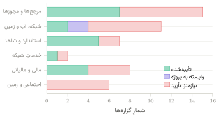
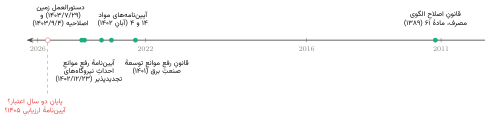
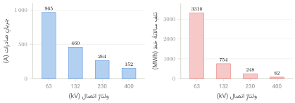
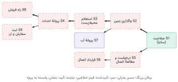
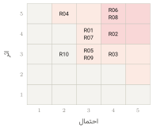

55 پروندهٔ مقررات و استانداردهای ایران
55.1 نقشهٔ فصل
این فصل حاصلِ پژوهش بر منابعِ رسمی و ثانوی در تاریخِ 2026-11-17 است. مقررات تغییر میکنند و چند وبگاهِ رسمی در روزِ پژوهش در دسترس نبودند. هیچ گزارهای از این فصل بی بازبینیِ مهندسان و کارشناسانِ حقوقی و مقرراتیِ آشنا با رویهٔ جاریِ ایران و بی وارسیِ دوباره در منبعِ رسمی برای پروژه به کار نمیرود. این فصل مشاورهٔ حقوقی، مالیاتی یا مالی نیست.
پس از این فصل، خواننده میتواند:
- نهادها، شرکتها و مرجعهای مرتبط با یک نیروگاهِ بادی–خورشیدیِ بزرگ در ایران را از منبعِ رسمی نام ببرد و نقشِ هر کدام را با وضعیتش بگوید.
- مسیرِ تأییدها (صلاحیت، زمین، استعلامِ محیطزیستی، پروانهٔ احداث، اتصال، آب، فروش) را با منبع، صاحب و وضعیت بسازد و مسیرِ بحرانیاش را بیابد.
- شکافهای داده برای مطالعههای شبکه را فهرست کند و درخواستِ کتبی را به مرجعِ درست بفرستد.
- استانداردهای اجباری و آنچه یک گواهیِ تجهیز نشان نمیدهد را بازبینی کند.
- خدماتِ شبکه، منابعِ مالی و مالیاتی و الزامهای زمین و جامعه را فقط با شاهدِ معتبر وارد پرونده کند و هر نامعلوم را برچسب بزند.
پیشنیاز: روشِ شناساییِ الزامها (فصل 54). این فصل همان روش را روی منابعِ واقعی به کار میبرد: سه برچسب، سابقهٔ جستوجو، دفترِ انطباق، استعلامِ کتبی و ردیابی.
- اگر خبرگزاریای بنویسد «مرحلههای مجوز به استانها واگذار شد»، این گزاره در دفترِ انطباق چه برچسبی میگیرد؟
- آییننامهای که «دو سال از تاریخِ لازمالاجراشدن» اعتبار دارد، در پروژهای که سه سال بعد برقدار میشود چه پرسشی میسازد؟
- فهرستِ استانداردهای اجباریِ واردات اینورترهای تا 5 kW را نام میبرد. برای اینورترِ 5.5 MVA چه میتوان گفت؟
پاسخها: (۱) نیازمندِ تأیید، با برچسبِ «منبعِ ثانوی»؛ (۲) آیا تمدید شده است؟ پرسشی برای استعلامِ کتبی؛ (۳) هیچچیز بهجز اینکه در این فهرست نیست. اینکه قاعدهٔ دیگری هست یا نه، نیازمندِ تأیید است. اگر دو پرسش یا بیشتر را نتوانستید، بخش 54.4.2 و بخش 54.3.4 را مرور کنید.
جایگاهِ این فصل در نیروگاهِ P. فرض این است که نیروگاهِ P در ایران ساخته شود (P–ایران). دادههای فنیِ نیروگاه همان دادههای کتاباند. نهادها، قانونها و آییننامهها از پژوهشِ 2026-11-17 میآیند و یادداشتِ کاملِ پژوهش با نشانیِ منبعها در پوشهٔ پژوهشِ پروژه ثبت است. مدتهای تأیید، گواهیِ نمونه و دادههای P آموزشیاند (A-552 تا A-556). نتیجهٔ فصل مبنای D-059 است.
55.1.1 سه برچسب و چگونگیِ خواندنِ جدولها
| برچسب | معنا در این فصل |
|---|---|
| تأییدشده | متنِ رسمی خوانده شد: متنِ فارسیِ مصوبه یا قانون (نسخهٔ چاپیِ مرکزِ پژوهشهای مجلس، از راهِ FAOLEX) یا وبگاهِ خودِ مرجع؛ با شماره و تاریخ |
| وابسته به پروژه | قاعده هست، ولی کاربردش به محل، ولتاژ، مالکیت یا قرارداد بستگی دارد |
| نیازمندِ تأیید | منبعِ رسمی پیدا نشد یا فقط منبعِ ثانوی (خبر، خلاصهٔ بینالمللی، ترجمهٔ غیررسمی) هست؛ پیش از استفاده استعلامِ کتبی لازم است |
شناسهها. هر گزاره شناسهای دارد (IR-01 تا IR-49) که در دفترِ برنامه همان است. هر جدول ستونِ منبع دارد. تاریخِ دسترسیِ همه 2026-11-17 است. وبگاههای ساتبا، وزارتِ نیرو، توانیر، شرکتِ مدیریتِ شبکه، سازمانِ حفاظتِ محیطزیست، بورسِ انرژی، سازمانِ هواپیمایی و وزارتِ میراثِ فرهنگی در روزِ پژوهش پاسخ ندادند. متنِ مصوبهها از نسخهٔ چاپیِ پایگاهِ مرکزِ پژوهشهای مجلس خوانده شد. خلاصهٔ انگلیسیِ یکی از این مصوبهها در یک پایگاهِ بینالمللی قاعدهٔ ارزیابیِ محیطزیستی را وارونه نوشته است (بخش 55.8.1). این خود درسی است: خلاصه منبع نیست.
55.1.2 سابقهٔ جستوجوی این پرونده
research log: official sites tried on 2026-11-17
satba.gov.ir no answer
moe.gov.ir no answer
tavanir.org.ir no answer
igmc.ir no answer
doe.ir no answer
irenex.ir no answer
mcls.gov.ir no answer
mcth.ir no answer
qavanin.ir blocked (script check)
cao.ir blocked (HTTP 403)
inso.gov.ir read
wrm.ir read
frw.ir read
read 3, no answer 8, blocked 2 of 13
the laws and bylaws came from the Majlis Research Center prints;
an unreachable site is a finding with a date and a retry, not
a reason to use a summary insteadمثال 55.1 (سه وبگاه از سیزده) پرسش. از سیزده وبگاهِ رسمی که در روزِ پژوهش آزموده شد، چند تا خوانده شد و متنِ مصوبهها از کجا آمد؟
پاسخ. سه وبگاه خوانده شد (سازمانِ ملیِ استاندارد، شرکتِ مدیریتِ منابعِ آب، سازمانِ منابعِ طبیعی). هشت وبگاه پاسخ ندادند و دو وبگاه دسترسی را بستند. متنِ قانونها و آییننامهها از نسخهٔ چاپیِ پایگاهِ مرکزِ پژوهشهای مجلس آمد.
تفسیر. وبگاهِ بیپاسخ خودش یک یافته است: تاریخ دارد و دوباره آزموده میشود. پاسخندادنِ وبگاه دلیلِ استفاده از خلاصه یا خبر نیست. در پروژهٔ واقعی، تیمِ محلی همین سندها را از راهِ رسمیِ دیگری (روزنامهٔ رسمی، نامهٔ اداری) میگیرد و راهِ دسترسی را در ستونِ منبع ثبت میکند (بخش 54.3.6).
برنامه:
companion/ch55/run.py
Iran: 49 facts by topic and status (sources read 2026-11-17)
topic verified proj-dep to-confirm
A authorities and approvals 7 0 8
B grid, export, water, land 2 2 7
C standards and evidence 5 0 2
E grid services 1 0 1
F finance and fiscal 4 0 4
G social and land 0 0 6
all 19 2 28
of the to-confirm items, 6 rest only on secondary sources
(news, lenders' or law firms' summaries): a lead, not a source
مثال 55.2 (کمتر از نیمی تأییدشده، و نه آنجا که طراحی میخواهد) پرسش. از ۴۹ گزاره چند تا تأییدشدهاند و نامعلومها بیشتر در کدام موضوعاند؟
پاسخ. ۱۹ تأییدشده، ۲ وابسته به پروژه و ۲۸ نیازمندِ تأیید. ۶ نیازمندِ تأیید فقط منبعِ ثانوی دارند. بیشترین نامعلومها در «مرجعها و مجوزها» (۸ از ۱۵)، «شبکه، آب و زمین» (۷ از ۱۱) و «جامعه و زمین» (۶ از ۶) است (شکل 55.1).
تفسیر. چارچوبِ خرید، زمین، استعلامِ محیطزیستی و منابعِ مالی متنِ رسمیِ خواندنی داشتند، ولی آییننامهٔ ۱۴۰۲ و اصلاحیهٔ ۱۴۰۳، که بیشترِ این قاعدهها از آنهاست، بنا بر خبرها در ۱۴۰۵ با آییننامهٔ تازهای جایگزین شدهاند (IR-10)؛ تا متنِ تازه خوانده نشود، نُه گزارهٔ متکی بر آنها نیازمندِ تأییدند. سندهای فنیِ اتصال، که طراحی بیش از همه به آنها تکیه دارد، پیدا نشدند. این عدد خلاصهٔ کارِ پیشِ رو را میدهد، نه کیفیتِ مقرراتِ ایران را: آنچه پیدا نشد ممکن است وجود داشته باشد ولی در دسترسِ عمومی نباشد.
55.2 الف. مرجعها و مسیرِ تأییدها
نخستین پرسشِ هر پرونده این است که چه کسی دربارهٔ چه چیزی تصمیم میگیرد (بخش 54.3.1). این بخش نهادهای مرتبط با یک نیروگاهِ بادی–خورشیدیِ خصوصی در ایران را با منبع و وضعیتِ هر گزاره میآورد و سپس چارچوبِ حقوقیِ ساخت و فروش را.
55.2.1 نهادها
| شناسه | گزاره | وضعیت | منبع |
|---|---|---|---|
| IR-01 | وزارتِ نیرو، از راهِ «سازمانِ ذیربط»، برقِ تجدیدپذیر را با قراردادِ بلندمدتِ خریدِ تضمینی میخرد | تأییدشده | قانونِ اصلاحِ الگوی مصرفِ انرژی، مادهٔ ۶۱ (۱۳۸۹) |
| IR-02 | سازمانِ انرژیهای تجدیدپذیر و بهرهوریِ انرژیِ برق (ساتبا) طرفِ قراردادهای مادهٔ ۶۱ است | تأییدشده | آییننامهٔ اجراییِ مادهٔ ۱۴ قانونِ رفعِ موانعِ توسعهٔ صنعتِ برق، ۱۴۰۲/۸/۱۰، مادهٔ ۱ |
| IR-03 | نامِ رسمیِ کنونیِ ساتبا (اصلاحیهٔ ۱۴۰۳ «سازمانِ انرژیهای تجدیدپذیر و بهرهوریِ ایران» نوشته است) | نیازمندِ تأیید | اصلاحیهٔ ۱۴۰۳/۹/۴ |
| IR-04 | شرکتِ مادرتخصصیِ توانیر تعرفهٔ انتقالِ برقِ صادراتی را اعلام میکند و توسعهٔ شبکهٔ بالادست بر عهدهٔ اوست | تأییدشده | قانونِ ۱۴۰۱، تبصرهٔ مادهٔ ۱۷؛ آییننامهٔ مادهٔ ۴، بندِ ۳ (د) |
| IR-05 | شرکتِ مدیریتِ شبکهٔ برقِ ایران ضابطههای پایداریِ شبکه را صادر میکند و همهٔ نیروگاههای متصل باید آنها را رعایت کنند | تأییدشده | آییننامهٔ مادهٔ ۴، ۱۴۰۲/۸/۱۶، مادهٔ ۶ |
| IR-06 | شرکتهای برقِ منطقهای و توزیع موظف به تحویلگرفتنِ برقِ تجدیدپذیرند | تأییدشده | مادهٔ ۶۱، تبصرهٔ ۲ |
| IR-07 | مدیرانِ عاملِ برقِ منطقهای با استانداریها مجوز و قرارداد صادر میکنند | نیازمندِ تأیید (ثانوی) | خبرگزاریِ مهر، 2026-04-05 |
| IR-08 | وظایفِ هیئتِ تنظیمِ بازارِ برق: متنِ رسمی پیدا نشد | نیازمندِ تأیید | – |
| IR-14 | قاعدهٔ مانعِ هوانوردی برای توربینِ بادی پیدا نشد | نیازمندِ تأیید | وبگاهِ سازمانِ هواپیمایی پاسخ نداد |
| IR-15 | سرمایهگذاریِ خارجی از راهِ سازمانِ سرمایهگذاری و کمکهای اقتصادی و فنی | نیازمندِ تأیید (ثانوی) | ترجمهٔ غیررسمیِ قانونِ تشویق و حمایتِ سرمایهگذاریِ خارجی، مادهٔ ۵ |
نهادهای دیگرِ پرونده در بخشهای خودشان آمدهاند: بورسِ انرژی (بخش 55.6)، سازمانِ حفاظتِ محیطزیست (بخش 55.8)، سازمانِ ملیِ استاندارد (بخش 55.4)، شرکتِ مدیریتِ منابعِ آب و سازمانِ منابعِ طبیعی و آبخیزداری (بخش 55.3).
مثال 55.3 (نامی که در دو متن دو جور است) پرسش. چرا IR-03 با آنکه نقشِ ساتبا تأییدشده است، نیازمندِ تأیید است؟
پاسخ. چون اصلاحیهٔ ۱۴۰۳ نامِ دیگری نوشته است و وبگاهِ سازمان در روزِ پژوهش در دسترس نبود.
تفسیر. نامِ طرفِ قرارداد در قرارداد، ضمانتنامه و نامهها باید دقیق باشد. نامِ نادرست در سندِ حقوقی گرفتاری میسازد. این یک استعلامِ کوتاه است و تا پاسخ برسد، در پرونده هر دو صورت با منبعشان نوشته میشوند.
55.2.2 چارچوبِ ساخت و فروش
| شناسه | گزاره | وضعیت | منبع |
|---|---|---|---|
| IR-09 | «آییننامهٔ رفعِ موانعِ احداثِ نیروگاههای تجدیدپذیر»: زمین، استعلامِ محیطزیستی و مجوزهای دیگر | تأییدشده | مصوبهٔ هیئتِ وزیران ۲۳۸۷۰۰/ت۶۲۰۵۴هـ، ۱۴۰۲/۱۲/۲۳ (2024-03-13) |
| IR-10 | آن آییننامه دو سال اعتبار داشت (تا حدودِ اسفندِ ۱۴۰۴)؛ بنا بر خبرها آییننامهٔ تازهای با همان عنوان (۲۶۰۷۳/ت۶۵۶۵۵هـ، مصوبِ ۱۴۰۵/۲/۳۰) جایگزینِ آن و اصلاحیههایش شده است؛ متنِ رسمی خوانده نشد | نیازمندِ تأیید | همان، مادهٔ ۶ |
| IR-11 | اصلاحِ آییننامه بر پایهٔ مادهٔ ۴۶ (الف) قانونِ برنامهٔ هفتم، با هدفِ ۳۰٬۰۰۰ مگاوات | تأییدشده | ۱۳۴۱۳۷/ت۶۳۳۶۵هـ، ۱۴۰۳/۹/۴؛ روزنامهٔ رسمیِ ۲۳۲۳۷ |
| IR-12 | «چارچوبِ تنظیمگریِ تولیدِ تجدیدپذیر» که مادهٔ ۱۲ اصلاحیه خواسته بود: تصویب شد؟ | نیازمندِ تأیید | همان، مادهٔ ۱۲ |
| IR-13 | پروانهٔ احداث از ساتبا؛ واگذاریِ مرحلهها به استانها از نیمهٔ دومِ ۱۴۰۴ | نیازمندِ تأیید (ثانوی) | روزنامهٔ تعادل، 2025-12-07؛ مهر، 2026-07-20 |
مثال 55.4 (آییننامهای با تاریخِ انقضا) پرسش. مادهٔ ۶ آییننامهٔ رفعِ موانع چه پرسشی برای نیروگاهِ P–ایران میسازد؟
پاسخ. آییننامه از ۱۴۰۲/۱۲/۲۳ مصوب شده و دو سال اعتبار دارد. اعتبارش حدودِ اسفندِ ۱۴۰۴ به پایان رسید و بنا بر خبرها آییننامهٔ تازهٔ ۱۴۰۵/۲/۳۰ (۲۶۰۷۳/ت۶۵۶۵۵هـ) جایگزینِ آن شده است (IR-10، ثانوی). پس قاعدههای زمین و استعلامِ محیطزیستیِ متنِ ۱۴۰۲ (بخش 55.3.4، بخش 55.8.1) تا خواندنِ متنِ رسمیِ تازه حاکم فرض نمیشوند.
تفسیر. این همان مسئلهٔ «کدام ویرایش» در فصلِ ۵۴ است (بخش 54.2.6)، این بار با یک تاریخِ انقضا. پرسش به صورتِ استعلامِ کتبی میرود و پاسخش چند سطرِ دیگرِ دفتر را جابهجا میکند. تا آن زمان این سطرها «تأییدشده در تاریخِ متن» هستند، نه «حاکم در تاریخِ پروژه».
55.2.3 خطِ زمانِ سندها و خواندنِ متنِ رسمی
سندهایی که در این پرونده خوانده شدند چند گونهاند: قانون مصوبِ مجلس (مانندِ قانونِ اصلاحِ الگوی مصرف و قانونِ رفعِ موانعِ توسعهٔ صنعتِ برق)، آییننامه یا مصوبهٔ هیئتِ وزیران با شماره و تاریخ، اصلاحیهٔ همان آییننامه، و دستورالعملِ یک وزارتخانه. هر کدام شماره، تاریخِ شمسی و جای انتشارِ خود را دارد و در ستونِ منبع با همین سه نشانی ثبت میشود. شکل 55.2 این سندها را روی خطِ زمان نشان میدهد.

مثال 55.5 (سندهایی که پشتِ هم آمدهاند) پرسش. از شکل 55.2 چه چیزی دربارهٔ پایداریِ قاعدههای پرونده برمیآید؟
پاسخ. پایهٔ خریدِ تضمینی (مادهٔ ۶۱) از ۱۳۸۹ پابرجاست. ولی همهٔ قاعدههای زمین، استعلامِ محیطزیستی، فروشِ آزاد و انتقالِ بیهزینه از سندهای سه سالِ اخیرند و یکی از آنها خودش تاریخِ انقضا دارد.
تفسیر. قاعدههایی که پیاپی آمدهاند ممکن است باز هم عوض شوند. پایشِ ماهانه (بخش 54.3.7) برای این پرونده سختگیرانهتر از کشوری است که قاعدههایش ده سال ثابت ماندهاند. تاریخِ هر وارسی در دفتر مینشیند و هر سطر پیش از هر دروازهٔ پروژه دوباره دیده میشود.
- نهادی که برقِ تجدیدپذیر را از راهِ قراردادِ تضمینی میخرد کدام است و بر پایهٔ کدام ماده؟
- نقشِ شرکتِ مدیریتِ شبکه در اتصال چیست و کدام گزارهٔ آن نامعلوم مانده است؟
- چرا نامِ رسمیِ طرفِ قرارداد ارزشِ استعلام دارد؟
- آییننامهٔ ۱۴۰۲/۱۲/۲۳ چه موضوعهایی را پوشش میدهد و تا کِی معتبر است؟
- گزارهای که فقط خبرگزاری گفته در دفتر چگونه ثبت میشود؟
55.3 ب. شبکه، خروجی، آب و زمین
این بخش آنچه را منبعها دربارهٔ اتصال، تأسیساتِ خروجی، آب و زمین میگویند جدا میکند از آنچه پیدا نشد. مهندسِ اتصال به دادههای مشخصی نیاز دارد (بخش 28.2.3) و بیشترِ آنها فقط با درخواستِ کتبی از بهرهبردار به دست میآیند.
55.3.1 اتصال و تأسیساتِ خروجی
| شناسه | گزاره | وضعیت | منبع |
|---|---|---|---|
| IR-16 | برای نیروگاهِ صنایعِ انرژیبر، پستِ مجاور و خطِ بلافصل با سرمایهگذار است و شبکهٔ بالادست با وزارتِ نیرو | وابسته به پروژه | آییننامهٔ مادهٔ ۴، بندِ ۳ (د) |
| IR-17 | ولتاژهای ۶۳، ۲۳۰ و ۴۰۰ کیلوولت در طرحِ صندوقِ توسعهٔ ملی نام برده شدهاند؛ ۱۳۲ کیلوولت در هیچ منبعی | نیازمندِ تأیید (ثانوی) | مهر، 2025-09-21 |
| IR-18 | خطوطِ انتقال برای فروش یا صادرات تا ظرفیتِ شبکه در دسترساند و هزینهٔ انتقال یا تعادل گرفته نمیشود | نیازمندِ تأیید | اصلاحیهٔ ۱۴۰۳، مادهٔ ۱۰ (الف) و (ج)؛ آییننامه بنا بر خبرها در ۱۴۰۵ جایگزین شد، متنِ تازه خوانده نشد |
| IR-19 | ضوابطِ فنیِ اتصالِ بادی و خورشیدی (توانِ راکتیو، گذر از خطا، بسامد) به صورتِ سندِ منتشرشده پیدا نشد | نیازمندِ تأیید | جستوجو؛ وبگاهها در دسترس نبودند |
| IR-20 | مشخصاتِ کنتور، اسکادا و «رؤیتپذیری» برای مرکزِ کنترل پیدا نشد | نیازمندِ تأیید (ثانوی) | ایسنا، 2026-05-12 |
مثال 55.6 (۱۳۲ کیلوولتِ نیروگاهِ P) پرسش. نیروگاهِ P برای اتصالِ 132 kV طراحی شده است. پروندهٔ ایران دربارهٔ این ولتاژ چه میگوید؟
پاسخ. هیچ منبعی ۱۳۲ کیلوولت را برای اتصالِ نیروگاه نام نمیبرد. منبعِ ثانوی ۶۳، ۲۳۰ و ۴۰۰ کیلوولت را نام برده است (IR-17).
تفسیر. ولتاژِ اتصال ورودیِ طراحی است، نه خروجیِ آن. اگر نزدیکترین پستِ مناسب ۶۳ یا ۲۳۰ کیلوولت باشد، ترانسفورماتورهای اصلی، کلیدخانه، کابل و حفاظت عوض میشوند (فصلهای ۲۳ تا ۲۶). این نخستین پرسشِ نامهٔ درخواست به شرکتِ برقِ منطقهای است و تا پاسخ، 132 kV فقط یک فرضِ آموزشی است (U-136).
مثال 55.7 (انتقالِ بیهزینه، تا ظرفیت) پرسش. IR-18 برای مدلِ مالی و برای طراحیِ اتصال چه معنایی دارد؟
پاسخ. برای نیروگاههای مشمولِ آییننامه، هزینهٔ انتقال یا تعادل گرفته نمیشود و فروش یا صادرات «تا ظرفیتِ شبکه» مجاز است.
تفسیر. دو قید در خودِ گزاره است. «تا ظرفیتِ شبکه» یعنی کاهشِ تولید به دستورِ شبکه ممکن است و جبرانش از این متن معلوم نیست (IR-38). «مشمولِ آییننامه» هم به اعتبارِ همان آییننامه برمیگردد (IR-10). پس در مدلِ مالی هزینهٔ انتقال صفر است، ولی سطرِ کاهشِ تولید حساسیت میخواهد (بخش 54.6).
55.3.2 ولتاژِ اتصال به صورتِ سناریو
برنامه:
companion/ch55/more.py
the connection voltage as scenarios (100 MW at pf 0.95; the ch 18
line conductor kept for a like-for-like loss comparison)
kV current A line loss MWh/yr status of the voltage
63 965 3310 named (secondary, IR-17)
132 460 754 not in any source (A-556)
230 264 248 named (secondary, IR-17)
400 152 82 named (secondary, IR-17)
the current, and with it the line loss and the switchgear,
follows the voltage the regional company names: at 63 kV the
same line loses 4.4 times the 132 kV loss -
a different conductor, transformer and bay, not a footnote
مثال 55.8 (جریان، تلف و کلید با ولتاژ عوض میشوند) پرسش. اگر شرکتِ برقِ منطقهای به جای ۱۳۲، ولتاژِ ۶۳ یا ۲۳۰ کیلوولت را برای اتصال تعیین کند، جریان و تلفِ خط چه میشوند؟
پاسخ. برای 100 MW با ضریبِ توانِ 0.95، جریان در ۶۳ کیلوولت 965 A، در ۱۳۲ کیلوولت 460 A و در ۲۳۰ کیلوولت 264 A است. با همان رسانای خطِ فصلِ ۱۸، تلفِ سالانه در ۶۳ کیلوولت 3,310 MWh میشود، یعنی ۴٫۴ برابرِ 754 MWh در ۱۳۲ کیلوولت (شکل 55.3).
تفسیر. ولتاژِ اتصال ورودیِ طراحی است. در ۶۳ کیلوولت همان رسانا درست نیست، ترانسفورماتورِ اصلی نسبتِ دیگری دارد و کلیدخانه جریانِ نامیِ دیگری میخواهد (فصلهای ۲۴ تا ۲۶). مقایسه با ثابت نگهداشتنِ رسانا انجام شده تا اثرِ ولتاژ دیده شود. طراحیِ هر گزینه رسانای خودش را دارد. ولتاژهای ۶۳ و ۲۳۰ از منبعِ ثانویاند (IR-17) و ۱۳۲ فرضِ آموزشی است (A-556).
55.3.3 آب
| شناسه | گزاره | وضعیت | منبع |
|---|---|---|---|
| IR-21 | پروانهٔ حفر و بهرهبرداری از آبِ زیرزمینی و پروانهٔ بهرهبرداری از آبِ سطحی از خدماتِ رسمیِ شرکتِ مدیریتِ منابعِ آبِ ایران است | تأییدشده | فهرستِ خدمات، wrm.ir |
| IR-22 | کدام شرکتِ آبِ منطقهای، و آیا آبِ ساخت و شستشو همین پروانه را میخواهد | وابسته به پروژه | همان |
به گفتهٔ یک خلاصهٔ بینالمللی، قانونِ توزیعِ عادلانهٔ آب (۱۳۶۱) همهٔ آبها را عمومی و از آنِ دولت میداند. این گزاره منبعِ ثانوی دارد و برای پروژه از متنِ رسمی خوانده میشود. ترازِ آبِ نیروگاه (پیوست H) تقاضا را میدهد و پروانه سقف را. در منطقههای کمآب، سقفِ پروانه ممکن است راهبردِ شستشو را تعیین کند (بخش 52.8.10).
55.3.4 زمین
| شناسه | گزاره | وضعیت | منبع |
|---|---|---|---|
| IR-23 | زمینهای ملی و دولتی برای نیروگاهِ بادی و خورشیدی واگذار میشود؛ ساتبا صلاحیت را تأیید میکند و متقاضیِ تأییدشده مستقیم به وزارتِ جهادِ کشاورزی مراجعه میکند | نیازمندِ تأیید | آییننامهٔ رفعِ موانع، مواد ۱ تا ۴؛ اصلاحیه، مادهٔ ۲؛ آییننامه بنا بر خبرها در ۱۴۰۵ جایگزین شد، متنِ تازه خوانده نشد |
| IR-24 | اجارهٔ سالانه حداکثر ۲۰ درصدِ ارزشِ منطقهای؛ اگر یک سال کاری نشود، زمین بازپس گرفته میشود | نیازمندِ تأیید | آییننامهٔ رفعِ موانع، مواد ۱ و ۴؛ آییننامه بنا بر خبرها در ۱۴۰۵ جایگزین شد، متنِ تازه خوانده نشد |
| IR-25 | دستورالعملِ واگذاریِ اراضیِ ملی و دولتی، وزارتِ جهادِ کشاورزی، ۰۲۰/۱۸۴۶۵۹، ۱۴۰۳/۷/۲۹ (فقط سرصفحه خوانده شد) | تأییدشده | از راهِ FAOLEX |
| IR-26 | متن «اشخاصِ ایرانی» میگوید: آیا شرکتِ با سهامِ خارجی واجدِ شرایط است؟ | نیازمندِ تأیید | همان |
مثال 55.9 (یک سال برای آغاز) پرسش. شرطِ بازپسگیریِ زمین (IR-24) با برنامهٔ نیروگاهِ P چه میکند؟
پاسخ. اگر ظرفِ یک سال پس از واگذاری کاری انجام نشود، زمین برمیگردد. در برنامهٔ آموزشی (بخش 55.5.1) پروانهٔ احداث و قراردادِ اتصال پس از واگذاری میآیند و اتصال تنها ۱٫۵ ماه شناوری دارد.
تفسیر. پس واگذاریِ زمین نباید زودتر از آمادگیِ مسیرِ اتصال و تأمینِ مالی درخواست شود، وگرنه ساعتِ یکساله پیش از بستنِ مالی تمام میشود. «انجامِ کار» به چه معناست (پیسازی؟ قرارداد؟) خودش پرسشی برای متنِ کاملِ دستورالعمل است (IR-25).
- کدام گزارههای اتصال تأییدشدهاند و کدام نه؟
- چرا ولتاژِ اتصال نخستین پرسشِ نامهٔ درخواست است؟
- «تا ظرفیتِ شبکه» در IR-18 چه پیامدی برای مدلِ مالی دارد؟
- کدام نهاد پروانهٔ برداشتِ آب را میدهد و چه چیزی وابسته به پروژه است؟
- شرطهای واگذاریِ زمین را بنویسید.
- چرا «اشخاصِ ایرانی» برای یک سرمایهگذارِ خارجی پرسش است؟
55.4 پ. استانداردها و دفترِ شاهد
استانداردِ بینالمللی در هر کشوری بهخودیِخود نیروی حقوقی ندارد (فصل 58). این بخش میپرسد کدام استانداردها در ایران اجباریاند، کدام استانداردهای بینالمللی به صورتِ ملی پذیرفته شدهاند و دفترِ شاهدِ پروژه چگونه ثبت میشود.
55.4.1 استانداردهای اجباری
| شناسه | گزاره | وضعیت | منبع |
|---|---|---|---|
| IR-27 | سازمانِ ملیِ استانداردِ ایران مرجعِ ملیِ استاندارد است | تأییدشده | inso.gov.ir |
| IR-28 | فهرستِ کالاهای وارداتیِ مشمولِ استانداردِ اجباری «اینورترهای خورشیدی تا ۵ کیلووات» را دارد | تأییدشده | فهرستِ وارداتِ آبانِ ۱۴۰۵ |
| IR-29 | در فهرستهای اجباری، ماژولِ فتوولتائیک و توربینِ بادی نیامده است | تأییدشده | فهرستِ استانداردهای اجباری (2026-06-30) |
| IR-30 | ترانسفورماتورِ قدرت (استانداردِ ملیِ ۲۶۲۰-۱) و کابلِ فشارِ متوسط (۳۵۶۹) اجباریاند | تأییدشده | همان |
| IR-31 | استانداردهای ملیای که IEC 61215، IEC 61730، IEC 62109 یا IEC 61400 را پذیرفته باشند پیدا نشد | نیازمندِ تأیید | فهرستِ استانداردهای ملی بارگذاری نشد |
| IR-32 | وزارتِ نیرو معیار و استانداردِ تجهیزاتِ تجدیدپذیر را با اولویتِ ساختِ داخل تعیین میکند | نیازمندِ تأیید | اصلاحیهٔ ۱۴۰۳، مادهٔ ۷ (الف)؛ آییننامه بنا بر خبرها در ۱۴۰۵ جایگزین شد، متنِ تازه خوانده نشد |
| IR-49 | باتریِ سربی–اسیدیِ ایستگاهی (۴۸۶۸-۲۲) و سلولِ لیتیومیِ ثانویه (۶۶۱۸-۳) در فهرستِ استانداردهای اجباریاند | تأییدشده | فهرستِ استانداردهای اجباری (2026-06-30) |
مثال 55.10 (آنچه فهرست میگوید و آنچه نمیگوید) پرسش. از فهرستهای اجباری برای تجهیزاتِ نیروگاهِ P چه میتوان نتیجه گرفت؟
پاسخ. ترانسفورماتورهای قدرت و کابلهای فشارِ متوسطِ نیروگاه زیرِ استانداردهای اجباریِ ملیاند و گواهیِ انطباقِ ملی میخواهند (IR-30). همان فهرست استانداردِ ملیِ ۱۳۳۶۸ (معیارِ تلفاتِ ترانسفورماتورهای روغنیِ توزیعِ 25 kVA تا 25,000 kVA با ولتاژِ تجهیزِ تا 36 kV) را هم اجباری کرده است؛ اینکه قسمتِ مربوط به ترانسفورماتورهای ۳۳ کیلوولتیِ واحدها و ترانسفورماتورِ مصرفِ داخلی را بگیرد، از سازمانِ ملیِ استاندارد پرسیده میشود. اینورترِ 5.5 MVA، ماژول و توربین در این فهرستها نیستند (IR-28، IR-29).
تفسیر. «در فهرست نیست» یعنی «اجباری بودنش از این فهرست برنمیآید»، نه «هیچ الزامی ندارد». وزارتِ نیرو میتواند معیار تعیین کند (IR-32) و ضابطههای شرکتِ مدیریتِ شبکه هم ممکن است گواهی بخواهند (IR-05). برای هر تجهیز، پرسشِ «کدام گواهی برای ترخیص و اتصال لازم است» استعلام میشود. سفارشگذاری پیش از پاسخ، خطرِ ماندنِ کالا در گمرک را دارد.
55.4.2 ردهٔ تجهیزات در برابرِ فهرستها
equipment classes of Plant P against the INSO mandatory lists
main and unit power transformers IR-30
mandatory national standard
33 kV cables IR-30
mandatory national standard
battery cells (lithium) IR-49
listed; scope for large ESS to confirm
UPS and station batteries (VRLA) IR-49
mandatory national standard
PV inverters 5.5 MVA IR-28
not on the list (list stops at 5 kW)
PV modules IR-29
not on the lists
wind turbines IR-29
not on the lists
3 classes need a national conformity certificate on the
evidence found; for the others 'not listed' is not 'no rule':
each goes into the questions to INSO (IR-31) before orderingمثال 55.11 (سه رده با گواهیِ ملی، چهار پرسش) پرسش. کدام ردههای تجهیزِ نیروگاهِ P بنا بر شواهدِ یافته گواهیِ انطباقِ ملی میخواهند؟
پاسخ. سه رده: ترانسفورماتورهای قدرت، کابلهای ۳۳ کیلوولت و باتریهای سربی–اسیدیِ ایستگاه و منبعِ بیوقفه. سلولِ لیتیومی در فهرست هست ولی اینکه دامنهاش سامانهٔ ذخیرهسازِ بزرگ را میگیرد یا نه نیازمندِ تأیید است. اینورترِ بزرگ، ماژول و توربین در فهرستها نیستند.
تفسیر. برای سه ردهٔ اول، گواهیِ ملی در سفارشِ خرید شرط میشود و برنامهٔ زمانیاش در برنامهٔ تدارکات میآید (فصلِ ۳۹). برای چهار ردهٔ دیگر یک نامه به سازمانِ ملیِ استاندارد میرود، پیش از سفارشگذاری.
55.4.3 کهنگیِ منبعها
sources of Iran older than 3 years or undated, on 2026-11-17
undated: 12 facts; older: 9 facts
IR-15: 24.5 years
IR-01: 15.7 years
IR-06: 15.7 years
IR-04: 4.0 years
IR-37: 4.0 years
IR-02: 3.0 years
IR-05: 3.0 years
IR-16: 3.0 years
an old text may still be in force, and a new one may exist
that the search did not reach: each gets a dated checkمثال 55.12 (قانونِ پانزدهساله، اصلاحیهٔ دوساله) پرسش. چند گزاره منبعِ بیتاریخ یا قدیمیتر از سه سال دارند و این یعنی چه؟
پاسخ. ۱۲ گزاره بیتاریخاند (بیشترشان «پیدا نشد» هستند) و ۹ گزاره منبعِ قدیمیتر از سه سال دارند. قدیمیترین ترجمهٔ غیررسمیِ قانونِ سرمایهگذاریِ خارجی است و پس از آن مادهٔ ۶۱ از ۱۳۸۹.
تفسیر. قانونِ قدیمی ممکن است هنوز حاکم باشد. مادهٔ ۶۱ پایهٔ قانونیِ خریدِ تضمینی است و اصلاحیههای بعدی آن را برنداشتهاند. ولی هر متنِ قدیمی یک وارسیِ تاریخدار میخواهد که اصلاحیه یا جایگزینِ تازهای ندارد. برای ایران، وارسیِ متنِ تلفیقی در سامانهٔ رسمیِ قوانین بخشی از سابقهٔ جستوجوست (بخش 54.3.6).
55.4.4 دفترِ شاهدِ پروژه
دفترِ انطباقِ P–ایران همان ده ستونِ فصلِ ۵۴ را دارد (بخش 54.4.1). برای هر گزارهٔ این فصل یک سطر باز میشود و ستونِ «منبع» شمارهٔ مصوبه، تاریخِ شمسی و میلادی، نشانیِ نسخهای که خوانده شده و تاریخِ دسترسی را نگه میدارد. برای ایران دو ستونِ دیگر هم کمک میکند: زبانِ متنِ خواندهشده (همهٔ مصوبهها فارسیاند و خلاصههای انگلیسی منبع نیستند) و راهِ دسترسی (وبگاهِ مرجع، پایگاهِ مرکزِ پژوهشهای مجلس، روزنامهٔ رسمی).
- کدام تجهیزاتِ نیروگاه زیرِ استانداردِ اجباریِ ملیاند؟
- «در فهرست نیست» چه نتیجهای را اجازه میدهد و چه نتیجهای را نه؟
- چرا خلاصهٔ انگلیسیِ یک مصوبه منبع نیست؟
- دو ستونی که دفترِ ایران به ده ستونِ فصلِ ۵۴ میافزاید کداماند؟
55.5 ت. تمرینِ پرونده
مثالهای کارشدهٔ فصل. چهار تمرین روی نیروگاهِ P–ایران: نقشهٔ تأییدها با برچسب و مسیرِ بحرانی، ردیابیِ سه الزامِ منبعدار (یکی از منبع تا محاسبه، نقشه، بندِ سفارش، آزمون و تأیید)، بازبینیِ آنچه یک گواهیِ تجهیز نشان نمیدهد، و فهرستِ دادههایی که مطالعههای شبکه میخواهند. هر چهار با دفترِ گزارههای بخشهای پیشین کار میکنند و مدتها آموزشیاند (A-552).
55.5.1 نقشهٔ تأییدها و دروازهها
approval map of Plant P - Iran (durations are TEACHING values)
step status months slack authority
S1 verified 2.0 0.0 SATBA
eligibility and technical competence (SATBA)
S2 to-confirm 4.0 0.0 SATBA, Agri. Jihad
national land allocation and land-use change
S3 to-confirm 0.5 0.0 Department of Environment
DOE inquiry after allocation (one week)
S4 to-confirm 2.0 0.0 SATBA / province
construction permit
S5 to-confirm 6.0 1.5 regional company / IGMC
connection application and studies
S6 to-confirm 2.0 1.5 Tavanir / regional
connection agreement or commitment letter
S7 project-dependent 3.0 2.5 regional water co.
water-use permit for construction and cleaning
S8 to-confirm 3.0 0.0 SATBA / Energy Exchange
sale route: Art 61 contract, green board or bilateral
S9 to-confirm 2.0 1.0 MIMT / Central Bank
import-order registration and FX allocation
time to the last approval: 11.5 months; critical path:
S1 > S2 > S3 > S4 > S8
steps not verified: 8 of 9; on the critical path: S2, S3, S4, S8
a step that is not verified on the critical path is the first
written clarification to send
مثال 55.13 (مسیرِ بحرانی از زمین میگذرد) پرسش. با مدتهای آموزشی، آخرین تأیید کِی به دست میآید، مسیرِ بحرانی کدام است و کدام گامِ تأییدنشده روی آن است؟
پاسخ. پس از ۱۱٫۵ ماه. مسیرِ بحرانی صلاحیت، واگذاریِ زمین، استعلامِ محیطزیستی، پروانهٔ احداث و راهِ فروش است (S1، S2، S3، S4، S8). از نُه گام هشت تأییدنشدهاند و چهار گامِ S2، S3، S4 و S8 روی مسیرِ بحرانیاند؛ تنها گامِ تأییدشده صلاحیت (S1) است (شکل 55.4).
تفسیر. نخستین کار خواندنِ متنِ رسمیِ آییننامهٔ ۱۴۰۵ است، چون زمین، استعلامِ محیطزیستی و راهِ فروش (S2، S3، S8) بر متنِ جایگزینشده تکیه داشتند. سپس استعلامِ کتبی دربارهٔ پروانهٔ احداث: کدام مرجع، کدام مدارک، چه مدت، و آیا واقعاً به استانها واگذار شده (IR-13). مسیرِ اتصال (S5 و S6) ۱٫۵ ماه شناوری دارد، ولی هر دو گامش نیازمندِ تأیید است. اگر مطالعهها بیش از ۷٫۵ ماه طول بکشند، اتصال بحرانی میشود. مدتها آموزشیاند. ساختار و برچسبها از منبعها میآیند.
55.5.2 برنامهٔ ماهبهماه
month-by-month plan from the approval map (teaching durations)
step start finish what
S1 0.0 2.0 eligibility and technical competence (SATBA)
S2 2.0 6.0 national land allocation and land-use change
S5 2.0 8.0 connection application and studies
S3 6.0 6.5 DOE inquiry after allocation (one week)
S7 6.0 9.0 water-use permit for construction and cleaning
S4 6.5 8.5 construction permit
S6 8.0 10.0 connection agreement or commitment letter
S8 8.5 11.5 sale route: Art 61 contract, green board or bilateral
S9 8.5 10.5 import-order registration and FX allocation
month 0: S1 and every letter of section D;
the written answers decide whether these months holdمثال 55.14 (ماهِ صفر: یک درخواست و پانزده نامه) پرسش. با مدتهای آموزشی، هر گام کِی آغاز و کِی تمام میشود و در ماهِ صفر چه کاری آغاز میشود؟
پاسخ. در ماهِ صفر فقط S1 (صلاحیت نزدِ ساتبا) آغاز میشود و همراهِ آن همهٔ نامههای بخشِ ت. واگذاریِ زمین و مطالعهٔ اتصال در ماهِ ۲ آغاز میشوند. استعلامِ محیطزیستی و پروانهٔ آب در ماهِ ۶، پروانهٔ احداث در ماهِ ۶٫۵، و راهِ فروش و ثبتِ سفارش در ماهِ ۸٫۵. آخرین گام در ماهِ ۱۱٫۵ تمام میشود.
تفسیر. این جدول از همان شبکهٔ مسیرِ بحرانی میآید (بخش 55.5.1). ماهها آموزشیاند، ترتیب نه. پاسخِ هر نامه ممکن است یک گام را جابهجا کند یا گامِ تازهای بیفزاید، و جدول با هر پاسخ دوباره ساخته میشود.
55.5.3 ردیابیِ سه الزام
traces of sourced requirements - Iran
IR-30: power transformers to the mandatory national standard
source INSO mandatory list: power transformers, INSO 2620-1
design ch 25/43 rating and losses calc; one-line PLP-ELE-DWG-0005
procurement order clause: INSO conformity certificate before shipping
construction certificate checked at receipt, before the transformer is set
test factory tests (ch 43) plus any national test INSO requires
approval INSO certificate; customs clearance; owner's acceptance
retained certificate, test reports, receipt record (ch 50 handover)
open stages: 0 of 7
IR-43: DOE inquiry instead of an EIA study (wind/solar > 100 MW)
source renewables bylaw Art 5, 1402/12/23 (text read 2026-11-17)
design layout outside the setbacks (IR-45); habitat screen (ch 33)
procurement E&S consultant scope: inquiry file, not a full EIA
construction works start only after the inquiry answer or silence
test not applicable: a permit, not a technical test
approval DOE answer, or a week of silence (amendment)
retained inquiry letter, delivery proof, answer or silence date
open stages: 0 of 7
IR-05: comply with IGMC grid-stability standards
source Art 4 bylaw Art 6 - but WHICH standards? (IR-19 to-confirm)
design OPEN
procurement OPEN
construction OPEN
test OPEN
approval OPEN
retained OPEN
open stages: 6 of 7مثال 55.15 (ترانسفورماتور، از فهرستِ اجباری تا پروندهٔ تحویل) پرسش. الزامِ استانداردِ اجباریِ ملی برای ترانسفورماتورِ قدرت (IR-30) را از منبع تا محاسبه، نقشه، بندِ سفارش، آزمون، تأیید و نگهداریِ شاهد دنبال کنید.
پاسخ. هر هفت مرحله یک سابقهٔ نامبرده دارند:
- منبع: فهرستِ استانداردهای اجباریِ سازمانِ ملیِ استاندارد، ردیفِ ترانسفورماتورِ قدرت (استانداردِ ملیِ ۲۶۲۰-۱).
- طراحی: محاسبهٔ نامی و تلفاتِ ترانسفورماتورِ اصلی (فصلهای ۲۵ و ۴۳) و نمودارِ تکخطیِ پست (PLP-ELE-DWG-0005، فصلِ ۲۳).
- تدارکات: بندی در سفارش که گواهیِ انطباقِ ملی را پیش از حمل شرط میکند.
- ساخت: وارسیِ گواهی هنگامِ رسیدن، پیش از نصبِ ترانسفورماتور روی فونداسیون.
- آزمون: آزمونهای کارخانه (فصلِ ۴۳) و هر آزمونِ ملی که سازمانِ استاندارد بخواهد.
- تأیید: گواهیِ سازمانِ استاندارد، ترخیصِ گمرکی و پذیرشِ مالک.
- نگهداری: گواهی، گزارشهای آزمون و سابقهٔ رسیدن در بستهٔ تحویل (فصلِ ۵۰).
تفسیر. این ردیابی در مرحلهٔ طراحی یک برنامه است: هر مرحله سابقهٔ نامبردهای دارد که هنوز ساخته نشده، و بستن با تولیدِ آن سابقهها رخ میدهد. دو پرسش در آن باز است: آیا سازمانِ استاندارد آزمونی جز آزمونهای کارخانه میخواهد (IR-31)، و آیا گواهی باید پیش از حمل صادر شود یا در گمرک. هر دو در نامهٔ سازمانِ استاندارد هستند (بخش 55.5.12). این همان مثالِ کارشدهٔ فصلِ ۵۴ است (بخش 54.5)، این بار روی یک منبعِ واقعی.
مثال 55.16 (یکی بستهشدنی، یکی در منبع گیر کرده) پرسش. ردیابیِ IR-43 (استعلامِ محیطزیستی به جای مطالعهٔ ارزیابی) و IR-05 (رعایتِ ضابطههای پایداریِ شبکه) چقدر جلو میروند؟
پاسخ. IR-43 از هفت مرحله فقط مرحلهٔ «آزمون» را ندارد، که برای یک مجوز کاربرد ندارد و دلیلش نوشته شده است. پس ردیابی بستهشدنی است: نامهٔ استعلام، رسیدِ تحویل، و پاسخ یا تاریخِ پایانِ یک هفته سکوت. IR-05 در همان مرحلهٔ منبع گیر کرده است: قانون رعایتِ ضابطهها را میخواهد، ولی کدام ضابطهها پیدا نشد (IR-19). شش مرحله باز میمانند.
تفسیر. الزامی که متنش «رعایتِ ضابطههای …» میگوید و ضابطهها را نمیآورد، الزامِ کامل نیست، بلکه ارجاعی است که باید دنبال شود. تا ضابطهها نرسند، طراحیِ اتصال روی الزامهای آموزشیِ فصلِ ۲۸ میماند و این در دفتر صریح نوشته میشود. طراحی به این دلیل متوقف نمیشود، ولی هر فرضِ آن صاحب و تاریخ دارد.
55.5.4 آنچه یک گواهی نشان نمیدهد
what an equipment certificate shows for Plant P - Iran
certificate: maker's type certificate of the 5.5 MVA PV inverter (ch 44)
shown model
certificate PCI-5500, project PCI-5500
shown standard and edition
certificate IEC 62109-1:2010, project IEC 62109-1:2010
shown test: safety
shown test: EMC
shown test: unit fault ride-through
NOT SHOWN test: national requirement (if any)
NOT SHOWN site ambient
tested to 45 C, site 50 C
NOT SHOWN site altitude
tested to 1000 m, site 1500 m
shown valid on delivery
valid to 2029-06-30, delivery 2028-01-15
shown issuer accredited for the scope
test lab accredited (scope listed)
NOT SHOWN reactive power at the POC
plant level: a product certificate cannot show it
NOT SHOWN plant ride-through
plant level: a product certificate cannot show it
not shown: 5 of 12 items
national rule: INSO's mandatory import list names solar inverters up to 5 kW
(IR-28); a 5.5 MVA unit is not on it - whether another national rule
applies is to-confirm (IR-31)مثال 55.17 (گواهیِ معتبر، پرسشِ باز) پرسش. گواهیِ نوعیِ اینورترِ 5.5 MVA برای P–ایران چه چیزهایی را نشان نمیدهد؟
پاسخ. پنج از دوازده بند: الزامِ ملی (اگر باشد)، دمای محیطِ 50 درجه (آزمون تا 45)، ارتفاعِ 1500 m (آزمون تا 1000 m)، و دو بندِ سطحِ نیروگاه: توانِ راکتیو در نقطهٔ اتصال و گذرِ نیروگاه از خطا.
تفسیر. گواهیِ محصول هرگز رفتارِ نیروگاه در نقطهٔ اتصال را نشان نمیدهد. آن با مطالعه و آزمونِ نیروگاه نشان داده میشود (فصل 50). دما و ارتفاع با کاهشِ توانِ سازنده یا آزمونِ تکمیلی بسته میشوند (فصل 44). بندِ ملی به IR-28 و IR-31 برمیگردد: فهرستِ اجباری تا 5 kW است و قاعدهٔ دیگری پیدا نشد.
55.5.5 دادههایی که مطالعههای شبکه میخواهند
grid-study inputs for Plant P - Iran: what the public
sources give against what the studies need (ch 28 register)
needed 12; complete 17%; missing 10; too weak 0
missing: fault levels max and min at the POC
missing: network equivalent for dynamic studies
missing: substation and line capacity available
missing: remote-end protection and reclosing
missing: background harmonics and allocation
missing: reactive power requirement
missing: fault ride-through requirement
missing: frequency response requirement
missing: telemetry list and protocol
missing: revenue metering specification
the request goes to: IGMC and the regional company, in writingمثال 55.18 (نامهای با ده پرسش) پرسش. منبعهای عمومی چه سهمی از ورودیهای مطالعهٔ شبکه را میدهند؟
پاسخ. دو از دوازده (17 %): ولتاژِ اتصال (در حدِ نامبردن، از منبعِ ثانوی) و قاعدهٔ کلیِ کاهشِ تولید. ده ورودی هیچ منبعِ عمومی ندارند: سطحِ اتصالِ کوتاه، مدلِ معادلِ شبکه، ظرفیتِ پست و خط، حفاظتِ سرِ دیگر، هارمونیکِ زمینه، الزامهای توانِ راکتیو و گذر از خطا و بسامد، فهرستِ دورسنجی و مشخصاتِ کنتور.
تفسیر. این ده پرسش نامهٔ درخواستِ داده به شرکتِ مدیریتِ شبکه و شرکتِ برقِ منطقهای را میسازد، با تاریخِ ارسال و سنی که در دفترِ استعلامها شمرده میشود (بخش 54.4.5). همان ثبتِ سیقلمیِ فصلِ ۲۸ (بخش 28.2.3) قالبِ آن است. مطالعهای که پیش از پاسخ آغاز شود روی فرض اجرا میشود و هر فرض با نتیجهای که ممکن است عوض کند ثبت میشود.
55.5.6 تفسیرهایی که کتبی میخواهند
interpretations the Iran dossier needs in writing
IN-01 (IR-43) is a hybrid of 60 MW wind + 50 MW PV one plant or two?
decides: 100 MW threshold for the environmental route
IN-02 (IR-26) may a company with foreign shareholders take national land?
decides: who can hold the land lease
IN-03 (IR-18) what is 'network capacity' and who declares it?
decides: curtailment without compensation
IN-04 (IR-24) what counts as works started within a year?
decides: loss of the land before financial close
IN-05 (IR-43) does silence after a week cover every inquiry?
decides: start of works without a written answer
IN-06 (IR-18) how does the financing law limit the no-fee rule?
decides: transmission charges in the model
6 readings; none may be settled by the design team -
each is a written question to the authority or counsel (ch 54 C)مثال 55.19 (شش خوانش، هیچکدام با تیمِ طراحی) پرسش. کدام خوانشها در پروندهٔ ایران پیش از تصمیم پاسخِ کتبی میخواهند؟
پاسخ. شش خوانش: یک یا دو نیروگاه بودنِ ترکیبِ بادی و خورشیدی، صلاحیتِ شرکتِ با سهامِ خارجی برای زمینِ ملی، معنای «ظرفیتِ شبکه»، معنای «آغازِ کار در یک سال»، دامنهٔ «سکوت به معنای موافقت»، و قیدِ قانونِ تأمینِ مالی بر انتقالِ بیهزینه.
تفسیر. هر خوانش تصمیمی را جابهجا میکند: مسیرِ محیطزیستی، دارندهٔ اجارهٔ زمین، کاهشِ تولیدِ بیجبران، از دست رفتنِ زمین پیش از بستنِ مالی، آغازِ کار بی پاسخِ کتبی، و هزینهٔ انتقال در مدل. تیمِ طراحی هیچکدام را خودش نمیبندد. هر کدام پرسشِ کتبی به مرجع یا مشاور میشود و پاسخ در دفترِ تفسیرها مینشیند (بخش 54.4.4).
55.5.7 دفترِ موردهای حلنشده
unresolved-issue log - Iran: 30 items, by whom to ask
SATBA 12
IGMC 3
Ministry of Energy 2
regional electricity company 2
Cabinet secretariat / SATBA 1
Civil Aviation Organization 1
Organization for Investment (OIETAI) 1
regional water company 1
local counsel 1
INSO 1
SATBA / local counsel 1
local tax advisor 1
Department of Environment 1
Department of Environment / counsel 1
Ministry of Cultural Heritage 1
each item: a written request, a date sent, an owner, and the
decision it holds up (ch 54 C)مثال 55.20 (۳۰ پرسش، پانزده نشانی) پرسش. موردهای حلنشده به کدام نشانیها میروند؟
پاسخ. ۳۰ مورد (۲۸ نیازمندِ تأیید و ۲ وابسته به پروژه) به پانزده نشانی. بیشترینِ آنها با ساتبا است (۱۲، از جمله نُه گزارهای که باید در آییننامهٔ تازه دوباره خوانده شوند)، سپس شرکتِ مدیریتِ شبکه (۳) و وزارتِ نیرو و شرکتِ برقِ منطقهای (هر کدام ۲).
تفسیر. پرسشهایی که به یک نشانی میروند در یک نامه جمع میشوند و نامه شماره، تاریخ و صاحب دارد. پرسشهای حقوقی و مالیاتی به مشاورِ صلاحیتدارِ محلی میروند، نه به مرجعِ اجرایی. برای پرسشهایی که منبعِ ثانوی دارند، نخست باید متنِ رسمی پیدا شود. گاهی پاسخ همان متن است.
55.5.8 اگر آییننامه منقضی شده باشد
if the 1402 bylaw lapsed (IR-10) - and with it its amendment
records resting on the bylaw: 9
IR-23: ch 14 land register
IR-23: ch 22 land parcels
IR-24: ch 21 land lease in opex
IR-24: ch 49 start of works
IR-43: ch 33 E&S plan
IR-43: approval map S3
IR-45: ch 14 setback layers
IR-45: ch 30 layout
IR-46: ch 33 land and livelihood plan
records resting on the 1403 amendment: 3
IR-18: ch 21 transmission charges = 0
IR-36: ch 21 sale-route scenarios
IR-39: ch 39 import and FX plan
one written answer (in force? extended? replaced?) decides
12 records across six chapters: the first letter
to the Cabinet secretariat and SATBAمثال 55.21 (یک پاسخ، دوازده سابقه) پرسش. آییننامهٔ ۱۴۰۲ پس از دو سال منقضی شد و بنا بر خبرها آییننامهٔ ۱۴۰۵ جایگزینش شده است. کدام سابقههای نیروگاهِ P–ایران دوباره باز میشوند؟
پاسخ. نُه سابقه که بر خودِ آییننامه تکیه دارند (دفترِ زمین، اجاره در هزینهٔ بهرهبرداری، برنامهٔ محیطزیستی و اجتماعی، لایههای حریم، جبران) و سه سابقه که بر اصلاحیهٔ آن تکیه دارند (هزینهٔ انتقال، راههای فروش، برنامهٔ واردات و ارز). روی هم ۱۲ سابقه در شش فصل.
تفسیر. این همان ارزیابیِ اثرِ ویرایشِ فصلِ ۵۴ است (بخش 54.4.7)، این بار برای انقضای یک سند. یک نامهٔ کوتاه («آیا آییننامه حاکم است، تمدید شده یا جایگزین دارد؟») ارزشمندترین نامهٔ پرونده است، چون پاسخش دوازده سابقه را یکجا تأیید یا باز میکند.
55.5.9 نامههای پرسش
written questions, one letter per addressee
to SATBA (12):
IR-03: SATBA's current official name (two forms in texts)
IR-07: regional company CEOs issue permits with governorates
IR-13: SATBA construction permit; steps devolved to provinces
IR-18: transmission open for sale/export; no transmission fees
IR-23: national land allocated for wind/solar via SATBA and Agri. Jihad
IR-24: lease capped at 20 % of land value; land back if idle 1 year
IR-32: MoE sets criteria for renewable equipment, domestic priority
IR-36: output belongs to the investor; no mandated prices
IR-39: FX and rial financing package; import orders to 30,000 MW
IR-43: wind/solar above 100 MW: no EIA study, DOE inquiry instead
IR-45: setbacks: gas, power, roads, heritage, passive defence
IR-46: land applicant pays compensation and improvements
to IGMC (3):
IR-19: no published grid code or wind/PV connection document found
IR-20: metering, SCADA and 'visibility' rules: specification not found
IR-33: no ancillary-service product for wind/PV published
to Ministry of Energy (2):
IR-08: electricity market regulatory board: mandate not found
IR-12: regulatory framework of amendment Art 12: adopted?
to regional electricity company (2):
IR-16: industry plants: adjacent substation and line by developer
IR-17: connection voltages 63/230/400 kV named; 132 kV not found
to Cabinet secretariat / SATBA (1):
IR-10: that bylaw lapsed ~Mar 2026; replaced 1405/2/30 (news)
to Civil Aviation Organization (1):
IR-14: aviation obstacle rule for wind turbines not found
to Organization for Investment (OIETAI) (1):
IR-15: foreign investment through the investment organisation
to regional water company (1):
IR-22: which regional water company; water for cleaning
to local counsel (1):
IR-26: foreign persons eligible for land allocation?
to INSO (1):
IR-31: national adoptions of IEC 61215/61730/62109/61400 not found
to SATBA / local counsel (1):
IR-38: utility-scale PPA term, currency, indexation, security
to local tax advisor (1):
IR-42: renewable tax and customs exemptions
to Department of Environment (1):
IR-44: new EIA bylaw 1405 lists wind/solar of 300 MW and above
to Department of Environment / counsel (1):
IR-47: consultation or resettlement rule below 300 MW not found
to Ministry of Cultural Heritage (1):
IR-48: cultural-heritage clearance procedureمثال 55.22 (پانزده نامه، نه پانزده تماس) پرسش. پرسشهای بازِ پرونده چگونه به نامه تبدیل میشوند؟
پاسخ. هر نشانی یک نامه میگیرد با شناسهٔ همهٔ گزارههایی که به آن مربوط است: ساتبا سه پرسش، شرکتِ مدیریتِ شبکه سه پرسش، وزارتِ نیرو و شرکتِ برقِ منطقهای هر کدام دو پرسش، و یازده نشانیِ دیگر هر کدام یک پرسش.
تفسیر. نامه شمارهٔ ارسال و تاریخ دارد و در دفترِ استعلامها سنش شمرده میشود (بخش 54.4.5). تماسِ تلفنی جای آن را نمیگیرد، چون پاسخِ شفاهی شاهد نیست (بخش 54.4.4). پرسشهایی که به مشاورِ حقوقی یا مالیاتی میروند نامه نیستند، بلکه درخواستِ نظرِ کتبیِ تاریخدارند.
55.5.10 دفترِ ریسکِ کشوری
country risk register of Plant P - Iran (TEACHING scores 1-5)
id L I score owner fact
R06 4 5 20 counsel IR-40
sanctions block equipment, payment or lenders
R08 4 5 20 commercial lead IR-38
PPA terms unknown, revenue a range
R02 4 4 16 grid engineer IR-17
connection voltage other than 132 kV
R01 3 4 12 permitting lead IR-10
the 1402 bylaw lapsed, routes reopen
R03 4 3 12 grid engineer IR-19
no published connection requirements
R07 3 4 12 finance lead IR-39
FX allocation for imports delayed
R04 2 5 10 permitting lead IR-24
land returned if works do not start in a year
R05 3 3 9 commercial lead IR-18
curtailment 'within capacity' without pay
R09 3 3 9 procurement IR-31
national certificate needed after ordering
R10 2 3 6 E&S manager IR-48
heritage find during works, no procedure
score 16 and above: R06, R08, R02 - each carries an action
(a letter, a design option, counsel) and a date; the scores
are teaching values, the facts behind them are sourced
مثال 55.23 (سه ریسکِ بزرگ، سه اقدامِ متفاوت) پرسش. کدام ریسکهای پروندهٔ ایران بالاترین امتیاز را دارند و اقدامِ هر کدام چیست؟
پاسخ. با امتیازهای آموزشی: تحریمها (R06) و نامعلوم بودنِ شرطهای قرارداد (R08) هر کدام ۲۰، و ولتاژِ اتصال (R02) ۱۶ (شکل 55.5). اقدامِ اولی نظرِ مشاورِ صلاحیتدار در تحریم است، دومی نامه به ساتبا و مشاورِ حقوقی و سناریوهای درآمد، و سومی نامه به شرکتِ برقِ منطقهای همراه با نگهداشتنِ دو گزینهٔ طراحی.
تفسیر. امتیازها آموزشیاند و پشتِ هر ریسک یک گزارهٔ منبعدار است. دفترِ ریسکِ کشوری همان دفترِ ریسکِ فصلِ ۲۲ است (فصل 22)، با این تفاوت که هر سطر شناسهٔ گزارهاش را دارد و با پاسخِ هر نامه بهروز میشود.
55.5.11 پاسخها و پیامدهایشان
هر نامه پاسخی میگیرد و هر پاسخ چیزی را در طراحی، برنامه یا مدل جابهجا میکند. جدولِ زیر پیامدِ هر پاسخِ ممکن را از پیش مینویسد تا وقتی پاسخ رسید، کار فقط اجرای یک شاخه باشد.
| پرسش | اگر پاسخ این باشد | پیامد برای P–ایران |
|---|---|---|
| ولتاژِ اتصال (IR-17) | ۲۳۰ کیلوولت | ترانسفورماتورِ اصلیِ ۲۳۰ به ۳۳، کلیدخانهٔ ۲۳۰، جریانِ کمتر (بخش 55.3.2) |
| ۶۳ کیلوولت | جریانِ دو برابر، رسانا و کلیدِ بزرگتر، شاید دو مدار | |
| اعتبارِ آییننامهٔ ۱۴۰۲ (IR-10) | تمدید شده | دوازده سابقه تأیید میشوند (بخش 55.5.8) |
| منقضی و جایگزین شده | زمین، محیطزیست، حریم و انتقال با سندِ تازه دوباره وارسی میشوند | |
| یک یا دو نیروگاه (IN-01) | یک نیروگاهِ ۱۱۰ مگاواتی | مسیرِ استعلامِ محیطزیستی |
| دو نیروگاه | مسیرِ هر کدام جدا وارسی میشود | |
| ضابطههای اتصال (IR-19) | سندِ منتشرشده با عدد | ردیابی مانندِ فصلِ ۵۴ (بخش 54.5) |
| «طبقِ مطالعه» | الزامها از مطالعهٔ بهرهبردار میآیند و در قراردادِ اتصال نوشته میشوند | |
| شرطهای قرارداد (IR-38) | قراردادِ مادهٔ ۶۱ با قیمتِ معین | یک حالتِ مبنا در مدل |
| فقط تابلوی سبز یا دوجانبه | بازهٔ قیمت و ریسکِ بازار در مدل |
مثال 55.24 (پاسخ میرسد، شاخه از پیش نوشته شده است) پرسش. اگر شرکتِ برقِ منطقهای ولتاژِ ۲۳۰ کیلوولت را تعیین کند، چه چیزهایی در پروندهٔ P عوض میشوند؟
پاسخ. نسبتِ ترانسفورماتورهای اصلی، ردهٔ کلیدخانه و حفاظتِ سمتِ فشارِ قوی، رسانای خط و مطالعههای اتصالِ کوتاه. جریانِ صادرات 264 A میشود، در برابرِ 460 A در ۱۳۲ کیلوولت.
تفسیر. پروندهای که پیامدِ هر پاسخ را از پیش نوشته باشد، با رسیدنِ پاسخ یک تصمیمِ آماده دارد، نه یک پرسشِ تازه. این همان «طراحی که با تغییرِ فرض چگونه عوض میشود» است که فصلِ ۵۹ در دفاعِ پایانی میخواهد.
55.5.12 متنِ چهار نامه
نامهها کوتاه، شمارهدار و با ارجاع به سند نوشته میشوند. چهار نمونه:
به شرکتِ مدیریتِ شبکهٔ برقِ ایران. «موضوع: درخواستِ ضابطهها و دادههای اتصالِ نیروگاهِ ترکیبیِ بادی–خورشیدیِ حدودِ ۱۰۰ مگاوات. با استناد به مادهٔ ۶ آییننامهٔ اجراییِ مادهٔ ۴ قانونِ رفعِ موانعِ توسعهٔ صنعتِ برق، خواهشمند است: (۱) فهرست و ویرایشِ ضابطههای پایداریِ شبکه که برای اتصالِ نیروگاهِ بادی و خورشیدی لازمالرعایه است؛ (۲) الزامهای توانِ راکتیو، گذر از خطا و پاسخِ بسامدی؛ (۳) فهرستِ دورسنجی و پروتکلِ مرکزِ کنترل؛ (۴) مشخصاتِ کنتور و شرطِ رؤیتپذیری؛ (۵) قاعدههای کاهشِ تولید؛ را اعلام فرمایید.»
به شرکتِ برقِ منطقهای. «موضوع: ولتاژ و پستِ اتصال. خواهشمند است: (۱) ولتاژ و پستِ پیشنهادیِ اتصال؛ (۲) ظرفیتِ در دسترسِ پست و خط؛ (۳) سطحِ اتصالِ کوتاهِ بیشینه و کمینه و مدلِ معادلِ شبکه؛ (۴) طرحِ حفاظت و وصلِ دوبارهٔ سرِ دیگر؛ (۵) هارمونیکِ زمینه و سهمِ مجاز؛ (۶) تقسیمِ دامنه و هزینهٔ تأسیساتِ اتصال؛ را اعلام فرمایید.»
به ساتبا. «موضوع: پروانهٔ احداث و قراردادِ خرید. خواهشمند است: (۱) نامِ رسمیِ کنونیِ سازمان؛ (۲) مرجع، مدارک و مدتِ صدورِ پروانهٔ احداث و وضعیتِ واگذاری به استانها؛ (۳) شرطهای قراردادِ خریدِ نیروگاهِ بزرگ (مدت، ارز، شاخصگذاری، ضمانتِ پرداخت، جبرانِ کاهشِ تولید)؛ (۴) اعتبارِ کنونیِ آییننامهٔ رفعِ موانعِ احداثِ نیروگاههای تجدیدپذیر؛ را اعلام فرمایید.»
به سازمانِ ملیِ استاندارد. «موضوع: گواهیِ انطباقِ تجهیزاتِ نیروگاه. خواهشمند است برای این ردهها اعلام فرمایید که آیا استانداردِ اجباری یا شرطِ ترخیص دارند و کدام استانداردِ ملی: اینورترِ فتوولتائیکِ بالای ۵ کیلووات، ماژولِ فتوولتائیک، توربینِ بادی، سامانهٔ ذخیرهسازِ لیتیومی.»
مثال 55.25 (نامهای که به سند ارجاع میدهد) پرسش. چرا نامه به شرکتِ مدیریتِ شبکه با ارجاع به مادهٔ ۶ آییننامه آغاز میشود؟
پاسخ. چون آن ماده رعایتِ ضابطههای این شرکت را لازم میکند (IR-05) و درخواست را از یک پرسشِ کلی به اجرای یک تکلیفِ قانونی تبدیل میکند.
تفسیر. نامهای که به سند ارجاع دهد، پاسخِ مشخصتری میگیرد و پاسخش در دفترِ انطباق به همان سطر وصل میشود. متنهای بالا نمونهٔ آموزشیاند. نامهٔ واقعی را تیمِ محلی با قالب و نشانیِ اداریِ درست مینویسد.
- با مدتهای آموزشی، آخرین تأیید کِی است و کدام گامِ تأییدنشده روی مسیرِ بحرانی است؟
- چرا مرحلهٔ «آزمون» در ردیابیِ یک مجوز «کاربرد ندارد» است و نه «باز»؟
- الزامی که فقط به «ضابطههای مرجعِ دیگر» ارجاع میدهد چگونه ثبت میشود؟
- پنج بندی که گواهیِ اینورتر نشان نمیدهد را نام ببرید.
- نامهٔ درخواستِ داده به چه کسی و با چه پرسشهایی میرود؟
- چرا پرسشهای حقوقی به مرجعِ اجرایی فرستاده نمیشوند؟
55.6 ث. وارسیِ خدماتِ شبکه
خدمتِ شبکه فقط وقتی در پرونده مینشیند که منبعِ معتبری آن را بخواهد یا اجازه دهد (بخش 20.8، پیوست J). این بخش برای P–ایران میپرسد چه خدمتی منبع دارد و چه خدمتی پیدا نشد.
| شناسه | گزاره | وضعیت | منبع |
|---|---|---|---|
| IR-33 | محصولِ خدماتِ جانبی (ذخیره، پاسخِ بسامدی) برای بادی و خورشیدی به صورتِ منتشرشده پیدا نشد | نیازمندِ تأیید | جستوجو |
| IR-34 | «تابلوی برقِ سبز» در بورسِ انرژی جای فروشِ برقِ تجدیدپذیر است | تأییدشده | آییننامهٔ مادهٔ ۱۴، تبصرهٔ مادهٔ ۶؛ اصلاحیهٔ ۱۴۰۳، مادهٔ ۱۰ (ب) |
grid services for Plant P - Iran: what a source requires or allows
export within network capacity verified
IR-18: transmission open, no fees
green-board sales verified
IR-34: Energy Exchange board
reactive power / voltage control to-confirm
IR-19: no document found
frequency response and reserve to-confirm
IR-33: no product found
ride-through to-confirm
IR-19: no published value
curtailment compensation to-confirm
IR-38: contract terms not found
verified 2, project-dependent 0, to-confirm 4
a service not found is not offered in the base: no capability,
test or revenue is assumed for it (ch 20, 54)مثال 55.26 (فروش آری، خدمت نامعلوم) پرسش. کدام کاربردهای شبکه برای P–ایران منبعِ تأییدشده دارند؟
پاسخ. دو از شش: صادرات تا ظرفیتِ شبکه (IR-18) و فروش در تابلوی برقِ سبز (IR-34). کنترلِ ولتاژ و توانِ راکتیو، پاسخِ بسامدی و ذخیره، گذر از خطا و جبرانِ کاهشِ تولید نیازمندِ تأییدند.
تفسیر. در حالتِ مبنا هیچ درآمدی از خدمات نیست و هیچ توانِ اضافی برای خدمت خریده نمیشود. توانِ فنیِ نیروگاه (فصلهای ۲۰ و ۲۷) هست، ولی صلاحیتِ قراردادی و تسویه از منبع نیامده است. اگر شرکتِ مدیریتِ شبکه در پاسخ ضابطهای برای توانِ راکتیو یا گذر از خطا بفرستد، آن ضابطه همان مسیرِ ردیابیِ فصلِ ۵۴ را طی میکند (بخش 54.5).
55.6.1 آنچه نیروگاه میتواند عرضه کند
what Plant P can offer if the grid operator asks (teaching values)
reactive power at 100 MW, 25 C ch 28
+46 / -63 Mvar (study model)
reactive power at 100 MW, test ch 50
30.6 Mvar lagging (DEV-11)
unit ride-through ch 44
as the maker's type-test report states
frequency droop (battery S1) ch 20
4 % on 110 MW, 20 MW cap
ramp limiting ch 20
PPC setting, any value asked
telemetry ch 35
IEC 60870-5-104 or IEC 61850 at the PPC
capability is ready; requirement, qualification and payment are
not sourced (IR-19, IR-33): nothing is offered in the baseمثال 55.27 (توانایی آماده، الزام نامعلوم) پرسش. اگر شرکتِ مدیریتِ شبکه فردا ضابطهای برای توانِ راکتیو یا پاسخِ بسامدی بفرستد، پرونده برای مقایسه چه دارد؟
پاسخ. شش سطرِ توانایی با فصلِ منبعش: پوشِ توانِ راکتیو از مطالعه (فصلِ ۲۸) و آزمون (فصلِ ۵۰)، گذرِ واحد از خطا بنا بر گزارشِ آزمونِ نوعی (فصلِ ۴۴)، شیبِ افتِ بسامد با باتری (فصلِ ۲۰)، محدودکردنِ نرخِ تغییرِ توان و دورسنجی.
تفسیر. مقایسهٔ ضابطهٔ تازه با این جدول کارِ یک روز است، چون عددها با منبعشان آمادهاند. ولی آماده بودنِ توانایی، الزام یا پرداخت نمیسازد. عرضهٔ خدمت در حالتِ مبنا صفر میماند تا منبع برسد (بخش 54.2.5).
- کدام دو کاربرد منبعِ تأییدشده دارند؟
- چرا توانِ فنیِ نیروگاه برای حسابِ درآمدِ خدمت کافی نیست؟
- پاسخِ شرکتِ مدیریتِ شبکه دربارهٔ گذر از خطا در دفتر چه مسیری را طی میکند؟
55.7 ج. وارسیِ منابعِ مالی
اگر تأمینِ مالی در گسترهٔ کار باشد، هر قلمِ درآمد، ارز، مالیات و وثیقه با منبع و بازبینِ صلاحیتدارِ محلی وارسی میشود و قلمِ تأییدنشده فقط در حساسیت مینشیند (بخش 54.6). این بخش منبعهای ایران را برای P–ایران جمع میکند. هیچ گزارهای در اینجا توصیهٔ مالی یا مالیاتی نیست.
| شناسه | گزاره | وضعیت | منبع |
|---|---|---|---|
| IR-35 | دولت ارزشِ سوختِ صرفهجوییشده را به صورتِ «حوالهٔ سبدِ سوخت» معادلِ نفتِ خام میپردازد، قابلِ فروش در بورسِ انرژی و با تبدیلِ ارزی به نرخِ میانگینِ سامانهٔ معاملاتِ ارزی | تأییدشده | قانونِ رفعِ موانعِ توسعهٔ صنعتِ برق، ۱۴۰۱/۸/۱۵، مادهٔ ۱۴، و آییننامهٔ آن |
| IR-36 | برقِ نیروگاههای مشمول در طولِ عمر از آنِ سرمایهگذار است و تعیینِ قیمتِ اجباری ممنوع است؛ صادرات (جز در اوج)، تابلوی سبز یا قراردادِ دوجانبه با صنایع | نیازمندِ تأیید | اصلاحیهٔ ۱۴۰۳، مواد ۹ و ۱۰؛ آییننامه بنا بر خبرها در ۱۴۰۵ جایگزین شد، متنِ تازه خوانده نشد |
| IR-37 | وزارتِ نیرو پس از تأمینِ نیازِ داخل مجوزِ صادراتِ برق به بخشِ خصوصی، بهویژه تجدیدپذیر، میدهد | تأییدشده | قانونِ ۱۴۰۱، مواد ۴ و ۱۷ |
| IR-38 | مدت، ارز، شاخصگذاری و ضمانتِ پرداختِ قراردادِ خریدِ نیروگاهِ بزرگ | نیازمندِ تأیید | پیدا نشد |
| IR-39 | بستهٔ تأمینِ ارزی و ریالیِ بانکِ مرکزی؛ ثبتِ سفارشِ واردات تا ۳۰٬۰۰۰ مگاوات | نیازمندِ تأیید | اصلاحیهٔ ۱۴۰۳، مواد ۷ و ۸؛ آییننامه بنا بر خبرها در ۱۴۰۵ جایگزین شد، متنِ تازه خوانده نشد |
| IR-40 | مقرراتِ تحریمِ ایالاتِ متحده (31 CFR Part 560)، با اقدامهایی تا آبانِ ۱۴۰۵ | تأییدشده | صفحهٔ تحریمهای ایرانِ دفترِ کنترلِ داراییهای خارجیِ آمریکا |
| IR-41 | آییننامهٔ اتحادیهٔ اروپا 2025/1975 در اصلاحِ 267/2012 | تأییدشده | EUR-Lex |
| IR-42 | معافیتِ مالیاتی یا گمرکیِ ویژهٔ تجدیدپذیرها | نیازمندِ تأیید | پیدا نشد |
finance and fiscal sources - Iran
Art 61 guaranteed purchase (contract form) verified
source: law + bylaw; review: SATBA, counsel
fuel-saving energy drafts verified
source: law 1401 Art 14 + bylaw; review: counsel
sale by green board or bilateral contract verified
source: amended bylaw; review: counsel
PPA term, currency, indexation, security to-confirm
source: not found; review: counsel
FX package and import orders verified
source: amended bylaw; review: bank, counsel
repatriation of profit (FIPPA) to-confirm
source: unofficial translation; review: counsel
tax and customs exemptions to-confirm
source: not found; review: tax advisor
US and EU sanctions verified
source: OFAC, EUR-Lex; review: sanctions counsel
land lease and compensation cost verified
source: renewables bylaw; review: counsel
verified 6, project-dependent 0, to-confirm 3
only verified items enter the base case (ch 54 E); every item
closes with a dated opinion of a qualified local reviewerمثال 55.28 (راههای فروش روشن، شرطهای قرارداد نه) پرسش. کدام قلمهای مالی برای مدلِ P–ایران تأییدشدهاند و کدام فقط حساسیتاند؟
پاسخ. شش از نُه تأییدشدهاند: خریدِ تضمینیِ مادهٔ ۶۱ به صورتِ چارچوب، حوالههای سوخت، فروش در تابلوی سبز یا قراردادِ دوجانبه، بستهٔ ارزی، تحریمها و هزینهٔ زمین. سه قلم نیازمندِ تأییدند: شرطهای قراردادِ خرید (مدت، ارز، شاخصگذاری، ضمانت)، انتقالِ سود به خارج و معافیتهای مالیاتی.
تفسیر. راههای فروش منبع دارند، ولی عددِ درآمد هنوز نه. مدلِ فصلِ ۲۱ با قیمت و مدتِ مشخص کار میکند و آن دو از قرارداد میآیند (IR-38). پس مدلِ P–ایران سناریوهایی برای هر راهِ فروش میسازد، نه یک حالتِ مبنا، تا شرطها روشن شوند. تحریمها روی خریدِ تجهیز، پرداخت و تأمینِ مالی اثر میگذارند و اثرشان را فقط مشاورِ حقوقیِ صلاحیتدار در تحریم برای هر قرارداد و هر طرف تعیین میکند. این کتاب در این باره نتیجهای نمیگیرد.
55.7.1 چرا شرطهای قرارداد لازماند
why the sale terms matter: the chapter 21 model at three prices
(teaching; the real price comes from the contract or the market)
price vs base debt k u min DSCR equity IRR
80% 88,894 1.22 4.8%
100% 121,025 1.20 10.2%
120% 124,378 1.40 15.9%
a 20 % lower price takes 32,131 k u of debt away and moves
the equity IRR by -5.4 points: without IR-38 (term, currency,
indexation, security) there is no base case, only a rangeمثال 55.29 (بی قیمت، فقط یک بازه) پرسش. مدلِ فصلِ ۲۱ با قیمتِ ۲۰ درصد کمتر و ۲۰ درصد بیشتر از مبنا چه میدهد؟
پاسخ. با ۸۰ درصدِ قیمت، بدهی 32,131 هزار واحد کمتر و بازدهِ سهام 4.8 % است. با ۱۲۰ درصد، بازده 15.9 % است و بدهی را اهرم محدود میکند.
تفسیر. بازهٔ بازده از 4.8 % تا 15.9 % یعنی بدونِ شرطهای قرارداد (IR-38) حالتِ مبنایی وجود ندارد. قیمتها آموزشیاند و هیچ قیمتی برای ایران فرض نشده است. این تمرین فقط نشان میدهد پیش از هر تصمیمِ مالی، مدت، ارز، شاخصگذاری و ضمانتِ پرداخت باید از منبع بیاید.
- «حوالهٔ سبدِ سوخت» چیست و منبعش کدام است؟
- چرا شرطهای قراردادِ خرید پیش از حالتِ مبنا لازماند؟
- چرا اثرِ تحریم بر یک قرارداد را مهندس تعیین نمیکند؟
- کدام سه قلمِ مالی نیازمندِ تأییدند؟
55.8 چ. وارسیِ زمین و جامعه
این بخش الزامهای ارزیابیِ محیطزیستی و اجتماعی، حریمها، جبران، رایزنی و میراث را برای P–ایران از منبع جدا میکند. هر جا قانون چیزی نگفته، آنچه پروژه انجام میدهد از چارچوبِ وامدهنده یا تعهدِ خودِ پروژه میآید و همین برچسب را میگیرد (فصل 33).
55.8.1 ارزیابیِ محیطزیستی
| شناسه | گزاره | وضعیت | منبع |
|---|---|---|---|
| IR-43 | نیروگاههای بادی و خورشیدیِ بیش از ۱۰۰ مگاوات از فهرستِ گروهِ صنعتیِ مربوط خارجاند و مشمولِ مطالعاتِ ارزیابیِ اثراتِ زیستمحیطی نیستند؛ پس از واگذاریِ زمین فقط استعلام از سازمانِ حفاظتِ محیطزیست، با پاسخ در یک هفته، و طبقِ اصلاحیه سکوت به معنای موافقت | نیازمندِ تأیید | آییننامهٔ رفعِ موانع، مواد ۳ و ۵ (متن خوانده شد)؛ اصلاحیه، بندِ ۲؛ آییننامه بنا بر خبرها در ۱۴۰۵ جایگزین شد، متنِ تازه خوانده نشد |
| IR-44 | آییننامهٔ تازهٔ ارزیابیِ اثرات (۱۴۰۵) نیروگاهِ بادی و خورشیدیِ ۳۰۰ مگاوات و بیشتر را مشمول میداند | نیازمندِ تأیید | متنِ اسکنشده، دوباره خوانده نشد |
مثال 55.30 (خلاصهای که قاعده را وارونه نوشت) پرسش. نیروگاهِ P حدودِ 110 MW ظرفیتِ نصبشده دارد. منبعها دربارهٔ ارزیابیِ اثراتِ آن چه میگویند؟
پاسخ. طبقِ آییننامهٔ ۱۴۰۲/۱۲/۲۳ (که بنا بر خبرها در ۱۴۰۵ با آییننامهٔ تازهای جایگزین شد)، نیروگاهِ بیش از ۱۰۰ مگاوات مطالعهٔ ارزیابی نمیخواهد و فقط استعلام میخواهد (IR-43). متنِ فارسی خوانده شد. خلاصهٔ انگلیسیِ همین مصوبه در یک پایگاهِ بینالمللی قاعده را وارونه نوشته است. آییننامهٔ تازهٔ ۱۴۰۵ آستانهٔ ۳۰۰ مگاوات را گزارش میکند (IR-44)، ولی متنش اسکن است و دوباره خوانده نشد.
تفسیر. چهار نکته. یک: P یک نیروگاهِ ترکیبیِ ۱۱۰ مگاواتی است، یا یک نیروگاهِ بادیِ ۶۰ و یک خورشیدیِ ۵۰ مگاواتی که هر دو زیرِ آستانهاند؟ متن نمیگوید و پاسخ تفسیرِ کتبی میخواهد (بخش 54.4.4). دو: خلاصه منبع نیست، حتی در پایگاهی معتبر. سه: آییننامهٔ ۱۴۰۲ تاریخِ انقضا دارد (IR-10) و آییننامهٔ ۱۴۰۵ شاید جایگزینِ قاعده باشد. پس پاسخِ قطعی برای P–ایران یک استعلامِ کتبی از سازمانِ حفاظتِ محیطزیست است. چهار: «مشمولِ ارزیابی نیست» یعنی الزامِ قانونی نیست. اگر وامدهنده چارچوبی مانندِ استانداردهای عملکردِ IFC (STD-108) را بخواهد، ارزیابیِ اثرات و رایزنی از آن چارچوب میآید (فصل 33).
55.8.2 حریمها، جبران و رایزنی
55.8.3 وقتی وامدهنده چارچوب میآورد
IFC Performance Standards (STD-108) against the Iran sources
(they apply only if the lenders require them)
PS1 E&S assessment and management
Iran sources: law asks an inquiry only (IR-43)
PS2 labour and working conditions
Iran sources: Labour Code (secondary, IR not listed)
PS3 resource efficiency, pollution
Iran sources: water permit (IR-21), waste
PS4 community health, safety, security
Iran sources: no rule found below 300 MW
PS5 land acquisition, resettlement
Iran sources: compensation sourced (IR-46)
PS6 biodiversity
Iran sources: setbacks sourced (IR-45); habitats to screen
PS7 indigenous peoples
Iran sources: applicability by qualified review only
PS8 cultural heritage
Iran sources: heritage setback (IR-45); procedure tbc
where the law is silent and the lenders are not, the project's
own commitments carry the item - recorded as commitmentsمثال 55.32 (هشت استاندارد، منبعهای ایران کنارشان) پرسش. اگر وامدهندگان استانداردهای عملکردِ IFC را بخواهند، منبعهای ایران برای کدامها چیزی دارند؟
پاسخ. برای ارزیابی (استعلام به جای مطالعه)، منابع و آلودگی (پروانهٔ آب)، زمین (جبران)، تنوعِ زیستی و میراث (حریمها) منبعِ تأییدشده هست. برای کار، سلامت و ایمنیِ جامعه و رایزنی منبعی پیدا نشد. کاربردِ استانداردِ مردمانِ بومی فقط با بررسیِ کارشناسِ صلاحیتدار تعیین میشود.
تفسیر. چارچوبِ وامدهنده بر قانون افزوده میشود و جایش را نمیگیرد. هر جا قانون ساکت است و وامدهنده نه، الزام از چارچوب میآید و در دفتر با منبعِ خودش ثبت میشود. هر جا هر دو ساکتاند، تعهدِ پروژه است (پیوست L).
- نیروگاهِ بیش از ۱۰۰ مگاوات طبقِ آییننامهٔ ۱۴۰۲ چه کاری برای محیطزیست انجام میدهد؟
- چرا خلاصهٔ انگلیسیِ آن مصوبه نباید منبع باشد؟
- «مشمولِ ارزیابیِ قانونی نیست» دربارهٔ الزامهای وامدهنده چه میگوید؟
- حریمهای قانونی را نام ببرید.
- تعهدِ پروژه و الزامِ قانونی در دفتر چگونه از هم جدا میشوند؟
55.9 نیروگاهِ P–ایران: سه مثالِ یکپارچه
برنامه:
companion/ch55/integrated.py
three numbers by hand
verified share: 19 / 49 = 39%
longest approval path: S1 2 + S2 4 + S3 0.5 + S4 2 + S8 3 = 11.5 months
connection path S1 + S5 + S6 = 2 + 6 + 2 = 10.0 months: slack 1.5 months
grid inputs given: 2 / 12 = 17%مثال 55.33 (مقدماتی: سه عدد با دست) پرسش. سهمِ گزارههای تأییدشده، طولِ مسیرِ بحرانیِ تأییدها و سهمِ ورودیهای شبکه که منبعِ عمومی دارند را با دست حساب کنید.
پاسخ. \(19/49 = 39\,\%\). مسیرِ بحرانی \(2 + 4 + 0.5 + 2 + 3 = 11.5\) ماه و مسیرِ اتصال \(2 + 6 + 2 = 10\) ماه با ۱٫۵ ماه شناوری. ورودیهای شبکه \(2/12 = 17\,\%\).
بررسیِ معقولبودن. هر سه با برنامه میخوانند: مثال 55.2، مثال 55.13 و مثال 55.18.
تفسیر. پرونده بیش از نیمه منبع دارد، ولی منبعها آنجا که مهندسِ اتصال میخواهد کماند. این شکافِ پرونده است.
Plant P - Iran: dossier readiness on 2026-11-17
[ ] every institution named with a source
[ ] the framework bylaw in force on the project date
[ ] connection voltage confirmed
[ ] grid-code documents identified
[x] written grid-data request prepared
[x] land route and lease conditions sourced
[ ] environmental route sourced and current
[ ] mandatory standards identified for each item
[x] sale route and its legal basis sourced
[ ] PPA terms known
[ ] sanctions reviewed by qualified counsel
[ ] community and heritage obligations sourced
3 of 12: the framework, land and sale routes have
sources; the technical connection rules, the current form of
the bylaw and the contract terms do not - those are the
written questions of section Dمثال 55.34 (میانی: آمادگیِ پرونده در روزِ پژوهش) پرسش. از دوازده وارسیِ آمادگی چند تا برقرارند؟
پاسخ. سه: درخواستِ کتبیِ داده آماده است، راهِ زمین و شرطهای اجاره منبع دارند، و راهِ فروش با پایهٔ قانونیاش منبع دارد.
تفسیر. آنچه نیست، فهرستِ کارِ ماههای آینده است: آییننامه در تاریخِ پروژه، ولتاژ و ضابطههای اتصال، مسیرِ محیطزیستیِ جاری، استانداردهای هر تجهیز، شرطهای قرارداد، بازبینیِ تحریمها و تکلیفهای جامعه و میراث.
Iran dossier basis of Plant P (D-059):
1 49 statements, each with status and source (IR-01..49);
19 verified, 2 project-dependent, 28 to-confirm
2 counterparty SATBA under Art 61; IGMC stability standards to
be obtained; regional company and Tavanir for connection
3 land through SATBA and Agriculture Jihad; lease cap 20 %;
one year to start works; foreign eligibility to confirm
4 environment: DOE inquiry under the 1402 bylaw while it is in
force; hybrid-vs-two-plants reading and the 1405 bylaw to confirm
5 132 kV is a teaching assumption until the regional company
names the connection voltage
6 base case: no service revenue; sale route as scenarios until
PPA terms are known; sanctions by qualified counsel
7 21 written questions to 15 addressees (section D)
8 review by engineers and regulatory specialists familiar with
current practice in Iran before any use or publicationمثال 55.35 (یکپارچه: مبنای پروندهٔ ایران) پرسش. مبنا را با موردهای باز بنویسید.
پاسخ. هشت بندِ بالا، با موردِ بازِ U-136: ۲۸ گزارهٔ نیازمندِ تأیید و ۲ گزارهٔ وابسته به پروژه، با ۳۰ پرسشِ کتبی به ۱۵ نشانی.
تفسیر. این تصمیمِ D-059 است. یافتههایی که به فصلهای دیگر برمیگردند:
- فصلهای ۲۳ تا ۲۸: ولتاژِ اتصالِ 132 kV در ایران منبع ندارد. طراحیِ P–ایران پیش از پاسخِ شرکتِ برقِ منطقهای دو گزینهٔ ۶۳ و ۲۳۰ کیلوولت را هم نگه میدارد.
- فصلِ ۳۳: برای یک نیروگاهِ بیش از ۱۰۰ مگاوات، ارزیابیِ اثرات و رایزنی الزامِ قانونی نیست (تا وقتی آییننامهٔ ۱۴۰۲ حاکم است). اگر لازم باشد، از چارچوبِ وامدهنده یا تعهدِ پروژه میآید.
- فصلهای ۴۴ و ۴۶: فهرستِ اجباری ترانسفورماتور و کابل را دارد. گواهیِ ملیِ آنها در سفارشگذاری شرط میشود.
- فصلِ ۲۱: راههای فروش منبع دارند و شرطهای قرارداد نه. مدل با سناریو کار میکند.
- فصلِ ۵۹: پروندهٔ ایران پیوستِ جداگانهٔ پروندهٔ یکپارچه است.
55.10 پرونده و تصمیمهای پیشین
earlier Plant P decisions that the Iran dossier touches
D-025 finance IR-18, IR-38, IR-40
D-032 grid study IR-17, IR-19
D-043 procurement IR-30, IR-40
D-022 architecture IR-17
D-024 control IR-19
D-026 site and schedule IR-24
D-029 transformers IR-17
D-031 power quality IR-19
D-033 civil and water IR-21
D-037 E&S basis IR-43
D-050 cable and switchgear IR-30
D-053 construction start IR-24
12 decisions, one from each of 12 chapters; D-025 finance carries 3 facts,
D-032 grid study and D-043 procurement 2 each - each decision is revised
when its answers arrive, with a change record (ch 38)مثال 55.36 (دوازده تصمیم، یک پرونده) پرسش. پروندهٔ ایران به کدام تصمیمهای پیشینِ نیروگاهِ P دست میزند؟
پاسخ. به دوازده تصمیم از دوازده فصل. مبنای مالی (D-025) سه گزارهٔ باز دارد: انتقال، شرطهای قرارداد و تحریم. مبنای مطالعهٔ شبکه (D-032) و مبنای تدارکات (D-043) هر کدام دو گزاره دارند.
تفسیر. پرونده جدا از طراحی نیست. هر پاسخ یک تصمیمِ پیشین را تأیید یا بازبینی میکند، و بازبینی از مسیرِ تغییرِ فصلِ ۳۸ با سابقهٔ تغییر میگذرد (بخش 38.5.4). این فهرست به صاحبِ هر تصمیم میگوید منتظرِ کدام پاسخ باشد.
55.10.1 پایشِ منبعها
source watch: 44 distinct sources behind 49 facts
checked monthly (a to-confirm fact rests on them): 24
checked before each gate (all verified): 20
each check is dated in the register, and 'no change' is
recorded too (ch 54 B)مثال 55.37 (۴۴ منبع، دو آهنگِ وارسی) پرسش. پشتِ ۴۹ گزاره چند منبعِ جدا هست و کدامها ماهانه وارسی میشوند؟
پاسخ. ۴۴ منبع. ۲۴ منبع پشتِ دستکم یک گزارهٔ نیازمندِ تأییدند و ماهانه وارسی میشوند. ۲۰ منبعِ دیگر فقط گزارهٔ تأییدشده دارند و پیش از هر دروازهٔ پروژه دوباره دیده میشوند.
تفسیر. پایشِ ماهانه برای همهٔ منبعها هزینه دارد و فایدهاش یکسان نیست. آهنگِ وارسی از وضعیتِ گزارهها میآید. اگر قاعدهای پیاپی عوض شود (مثال 55.5)، منبعش به گروهِ ماهانه میرود (بخش 54.3.7).
55.10.2 پرونده در یک صفحه
| موضوع | آنچه منبع دارد | آنچه باز است | نخستین اقدام |
|---|---|---|---|
| مرجعها | خریدِ تضمینی از راهِ ساتبا؛ ضابطههای شبکه لازم | نامِ ساتبا؛ هیئتِ تنظیمِ بازار | نامه به ساتبا |
| چارچوب | آییننامهٔ ۱۴۰۲ و اصلاحیهٔ ۱۴۰۳ | اعتبارِ آییننامه پس از دو سال | نامه به دبیرخانه و ساتبا |
| اتصال | انتقالِ بیهزینه تا ظرفیت | ولتاژ، ضابطهها، دادههای شبکه | نامه به دو شرکت |
| آب و زمین | پروانهٔ آب؛ واگذاری، سقفِ اجاره، شرطِ یکساله | شرکتِ آبِ منطقه؛ صلاحیتِ سهامدارِ خارجی | نامه و نظرِ مشاور |
| استاندارد | ترانسفورماتور، کابل و باتریِ سربی اجباری | اینورتر، ماژول، توربین، سلولِ لیتیومی | نامه به استاندارد |
| خدمات | فروش، صادرات، تابلوی سبز | همهٔ خدماتِ فنی | ضابطه از شرکتِ مدیریتِ شبکه |
| مالی | راههای درآمد، بستهٔ ارزی، تحریمها | شرطهای قرارداد، انتقالِ سود، مالیات | نظرِ مشاورانِ حقوقی و مالیاتی |
| جامعه | استعلام برای بیش از ۱۰۰ مگاوات؛ حریم؛ جبران | رایزنی، میراث، آییننامهٔ ۱۴۰۵ | نامه به محیطزیست؛ چارچوبِ وامدهنده |
55.11 ساخت و زنجیرهٔ تأمین
اولویتِ ساختِ داخل (IR-32)، استانداردهای اجباریِ ترانسفورماتور و کابل (IR-30) و ثبتِ سفارش و تأمینِ ارز (IR-39) سه رابطِ این پرونده با زنجیرهٔ تأمیناند. پروندهٔ کارخانه (فصلهای ۴۰ تا ۴۸) برای هر تجهیز گواهیِ ملیِ لازم را هم در بر میگیرد. تأخیرِ حمل و تحریم بر برنامهٔ تدارکات اثر دارند (فصلِ ۳۹). سنجشِ این اثر برای هر قرارداد با مشاورِ صلاحیتدار است.
55.12 دستورِ کارِ بازبینیِ محلی
این فصل پیش از انتشار و پیش از هر استفاده در پروژه به بازبینیِ کارشناسانِ آشنا با رویهٔ جاریِ ایران میرسد. دستورِ کارِ هر بازبین معلوم است تا بازبینی به یک «خواندمش» کلی ختم نشود:
| بازبین | گزارهها | پرسشِ اصلی |
|---|---|---|
| کارشناسِ مقرراتِ برق | IR-01 تا IR-13، IR-33، IR-34 | آیا نهادها، نامها و سندها جاریاند و سندِ تازهتری هست؟ |
| مهندسِ اتصالِ شبکه | IR-16 تا IR-20 | ضابطهها و ولتاژهای اتصال در رویهٔ جاری چیست؟ |
| حقوقدانِ انرژی و زمین | IR-23 تا IR-26، IR-36، IR-38 | خوانشِ قراردادها، زمین و شش تفسیرِ بخشِ ت |
| مشاورِ تحریم | IR-40، IR-41 | اثر بر خرید، پرداخت و وام برای هر قرارداد |
| مشاورِ مالیاتی و ارزی | IR-35، IR-39، IR-42 | مالیات، معافیتها و انتقالِ ارز |
| کارشناسِ استاندارد و گمرک | IR-27 تا IR-32، IR-49 | گواهیهای لازم برای هر ردهٔ تجهیز |
| کارشناسِ محیطزیست و اجتماعی | IR-43 تا IR-48 | مسیرِ محیطزیستیِ جاری، رایزنی و میراث |
هر بازبین برای هر گزاره یکی از سه پاسخ را مینویسد: «درست و جاری»، «تغییر کرده؛ منبعِ تازه این است»، یا «نمیدانم؛ از این مرجع بپرسید». پاسخ با نام و تاریخ در ستونِ «وارسیِ دوم» دفتر مینشیند (بخش 54.3.6). بازبینیای که فقط امضا شود، شاهد نیست.
55.13 جعبهٔ استاندارد و انطباق
- همهٔ گزارههای کشوری این فصل از منبعهاییاند که شماره، تاریخ و نشانیشان در یادداشتِ پژوهش و ستونِ منبع آمده است. تاریخِ دسترسیِ همه 2026-11-17 است.
- استانداردهای بینالمللیِ نامبرده (مانندِ IEC 62109-1:2010، STD-044) در دفترِ استانداردها ثبتاند. پذیرشِ ملیِ آنها در ایران پیدا نشد (IR-31).
- چارچوبِ وامدهنده، اگر به کار رود: استانداردهای عملکردِ IFC (STD-108) و اصولِ اکواتور (STD-109).
- این فصل باید پیش از انتشار و پیش از هر استفاده در پروژه به بازبینیِ مهندسان و کارشناسانِ مقرراتیِ آشنا با رویهٔ جاریِ ایران برسد.
55.14 تحویلدادنیِ نیروگاهِ P
| سند | محتوا | معیارِ پذیرش |
|---|---|---|
| PLP-PRJ-REG-0039 | ماتریسِ انطباقِ ایران: ۴۹ گزاره با وضعیت و منبع | هر گزاره با منبع، تاریخ و برچسب |
| PLP-PRJ-REP-0011 | نقشهٔ تأییدها و برنامهٔ دروازهها | گامها با صاحب و وضعیت؛ مدتها برچسبِ «آموزشی» یا «از مرجع» |
| PLP-PRJ-REG-0040 | دفترِ موردهای حلنشده و استعلامها | هر مورد با نشانی، تاریخِ ارسال و تصمیمی که منتظرش است |
این فصل اینها را به پروندهٔ نیروگاهِ P میافزاید:
- تصمیمِ D-059: مبنای پروندهٔ ایران (مثال 55.35).
- فرضهای A-552 تا A-556: مدتهای تأیید (A-552)، دادههای ساختگاهِ P–ایران برای گواهی (دمای 50 درجه و ارتفاعِ 1500 m؛ A-553)، گواهیِ نمونه (A-554)، فهرستِ ورودیهای شبکه (A-555)، ولتاژِ 132 kV به عنوانِ فرض (A-556).
- ناشناختهٔ U-136: گزارههای نیازمندِ تأییدِ ایران.
- پیوند: فصلِ ۵۴ روش را داد. فصلِ ۵۸ پذیرشِ استانداردها را و فصلِ ۵۹ پیوستِ ایرانِ پروندهٔ یکپارچه را کامل میکنند.
55.15 جمعبندی
- روش: هر گزاره شناسه، منبع، تاریخ و یکی از سه برچسب را دارد. منبعِ ثانوی سرنخ است، نه منبع. خلاصهٔ انگلیسی جای متنِ فارسیِ مصوبه را نمیگیرد (بخش 55.1).
- مرجعها و چارچوب: خریدِ تضمینی از راهِ ساتبا بر پایهٔ مادهٔ ۶۱. ضابطههای پایداریِ شرکتِ مدیریتِ شبکه لازماند ولی پیدا نشدند. آییننامهٔ رفعِ موانع (۱۴۰۲/۱۲/۲۳) دو سال اعتبار داشت و بنا بر خبرها آییننامهٔ ۱۴۰۵/۲/۳۰ جایگزینش شده است؛ متنِ تازه نیازمندِ تأیید است (بخش 55.2).
- شبکه، آب، زمین: انتقالِ بیهزینه تا ظرفیتِ شبکه؛ ۱۳۲ کیلوولت بیمنبع؛ پروانهٔ آب از شرکتِ آبِ منطقهای؛ زمینِ ملی با سقفِ اجاره و شرطِ یکساله (بخش 55.3).
- استانداردها: ترانسفورماتور و کابل اجباریاند. اینورترِ بزرگ، ماژول و توربین در فهرستهای اجباری نیستند و پذیرشِ ملیِ استانداردهای بینالمللیشان پیدا نشد (بخش 55.4).
- تمرین: مسیرِ بحرانیِ آموزشیِ ۱۱٫۵ ماهه از زمین و پروانهٔ احداث میگذرد. ردیابیِ استعلامِ محیطزیستی بستهشدنی است و ردیابیِ ضابطههای شبکه در منبع گیر کرده. گواهیِ تجهیز پنج بند را نشان نمیدهد. ده ورودیِ شبکه درخواستِ کتبی میخواهند (بخش 55.5).
- خدمات، مالی، جامعه: فروش و صادرات منبع دارند و خدمات نه. راههای درآمد منبع دارند و شرطهای قرارداد نه. تحریمها با مشاورِ صلاحیتدار بررسی میشوند. ارزیابیِ قانونی برای بیش از ۱۰۰ مگاوات استعلام است و تعهدهای اجتماعی از چارچوبِ وامدهنده یا خودِ پروژه میآیند (بخش 55.6 تا بخش 55.8).
55.15.1 واژگانِ فصلِ ۵۵
| فارسی | انگلیسی | یادداشت |
|---|---|---|
| خریدِ تضمینی | guaranteed purchase | |
| پروانهٔ احداث | construction permit | |
| استعلامِ محیطزیستی | environmental inquiry | |
| ارزیابیِ اثراتِ زیستمحیطی | environmental impact assessment | |
| تابلوی برقِ سبز | green electricity board | |
| حوالهٔ سبدِ سوخت | fuel-basket draft | |
| حریم | setback | |
| پدافندِ غیرعامل | passive defence | |
| استانداردِ اجباری | mandatory standard | |
| منبعِ ثانوی | secondary source | |
| پرونده | dossier | |
| رؤیتپذیری | visibility (to the control centre) | |
| واگذاریِ زمین | land allocation | |
| ارزشِ اعیانی | value of improvements | |
| ثبتِ سفارش | import-order registration | |
| مسیرِ بحرانی | critical path |
55.16 ارزیابیِ پلکانی
معیارِ تسلطِ این فصل: خواننده میتواند برای هر گزارهٔ کشوری منبع، تاریخ و برچسب بیاورد؛ مسیرِ تأییدها را با صاحب و وضعیت بسازد؛ نامهٔ درخواستِ داده و استعلامها را به نشانیِ درست بفرستد؛ و آنچه را منبع ندارد در طراحی و مدلِ مالی به صورتِ فرض یا سناریو نگه دارد. پاسخها در بخش 55.17 آمدهاند.
55.16.1 پلهٔ ۱: مبانی
تمرین 55.1 سه برچسبِ وضعیت را در پروندهٔ ایران تعریف کنید.
تمرین 55.2 منبعِ ثانوی چیست و چه برچسبی میگیرد؟
تمرین 55.3 طرفِ قراردادهای خریدِ تضمینی کیست و بر پایهٔ کدام ماده؟
تمرین 55.4 نقشِ شرکتِ مدیریتِ شبکه چیست؟
تمرین 55.5 نقشِ توانیر چیست؟
تمرین 55.6 آییننامهٔ رفعِ موانع چه تاریخی دارد و چه مدت معتبر است؟
تمرین 55.7 هدفِ ظرفیتِ اصلاحیهٔ ۱۴۰۳ چیست؟
تمرین 55.8 هزینهٔ انتقال برای نیروگاههای مشمول چیست؟
تمرین 55.9 کدام ولتاژها در منبعها نام برده شدهاند؟
تمرین 55.10 پروانهٔ برداشتِ آب از کدام نهاد است؟
تمرین 55.11 سقفِ اجارهٔ زمین چیست؟
تمرین 55.12 اگر ظرفِ یک سال کاری نشود چه میشود؟
تمرین 55.13 کدام تجهیزات زیرِ استانداردِ اجباریاند؟
تمرین 55.14 فهرستِ وارداتِ اجباری کدام اینورترها را دارد؟
تمرین 55.15 «تابلوی برقِ سبز» کجاست؟
تمرین 55.16 حوالهٔ سبدِ سوخت چیست؟
تمرین 55.17 نیروگاهِ بیش از ۱۰۰ مگاوات طبقِ آییننامهٔ ۱۴۰۲ چه کاری برای محیطزیست میکند؟
تمرین 55.18 پاسخِ استعلام چه مدت است؟
تمرین 55.19 حریمهای قانونی کداماند؟
تمرین 55.20 چه کسی جبران و ارزشِ اعیانی را میپردازد؟
تمرین 55.21 گونههای سندی که در پرونده خوانده شد را نام ببرید.
تمرین 55.22 کدام ردههای تجهیز گواهیِ انطباقِ ملی میخواهند؟
تمرین 55.23 جریانِ صادراتِ ۱۰۰ مگاوات در ۱۳۲ کیلوولت با ضریبِ توانِ ۰٫۹۵ چیست؟
تمرین 55.24 از سیزده وبگاهِ رسمی چند تا خوانده شد؟
تمرین 55.25 شش تفسیرِ کتبیِ پرونده کداماند؟
تمرین 55.26 کدام استانداردهای عملکردِ وامدهنده منبعِ ایرانی دارند؟
تمرین 55.27 کدام شرکتها موظف به تحویلگرفتنِ برقِ تجدیدپذیرند؟
تمرین 55.28 پایهٔ قانونیِ اصلاحیهٔ ۱۴۰۳ کدام ماده از کدام قانون است؟
تمرین 55.29 دستورالعملِ واگذاریِ اراضیِ ۱۴۰۳/۷/۲۹ از کدام وزارتخانه است؟
تمرین 55.30 کدام نهاد معیار و استانداردِ تجهیزاتِ تجدیدپذیر را تعیین میکند؟
تمرین 55.31 صادراتِ برق در چه زمانی از روز مجاز نیست؟
تمرین 55.32 تبدیلِ ارزیِ حوالههای سوخت با کدام نرخ است؟
تمرین 55.33 کدام دو مقررهٔ تحریم تأییدشدهاند؟
تمرین 55.34 هدفِ ظرفیتِ اصلاحیه و ثبتِ سفارش چند مگاوات است؟
تمرین 55.35 پشتِ ۴۹ گزاره چند منبعِ جدا هست؟
تمرین 55.36 پرونده به چند تصمیمِ پیشین دست میزند؟
تمرین 55.37 هفت مرحلهٔ ردیابیِ استانداردِ اجباریِ ترانسفورماتور را نام ببرید.
تمرین 55.38 بندِ سفارشِ ترانسفورماتور دربارهٔ گواهیِ ملی چه میگوید؟
تمرین 55.39 در شکل 55.5 کدام خانهها قرمزند؟
تمرین 55.40 شکل 55.3 را بخوانید: تلفِ خط در ۲۳۰ کیلوولت چند است؟
55.16.2 پلهٔ ۲: تحلیل
تمرین 55.41 چرا گزارهٔ IR-03 با آنکه نقشِ ساتبا تأییدشده است نیازمندِ تأیید است؟
تمرین 55.42 مادهٔ ۶ آییننامهٔ رفعِ موانع چه پرسشی برای پروژه میسازد؟
تمرین 55.43 چرا ۱۳۲ کیلوولت نخستین پرسشِ نامهٔ درخواست است؟
تمرین 55.44 «تا ظرفیتِ شبکه» چه پیامدی برای مدلِ مالی دارد؟
تمرین 55.45 شرطِ یکساله با برنامهٔ تأییدها چه میکند؟
تمرین 55.46 «در فهرستِ اجباری نیست» چه نتیجهای را اجازه میدهد؟
تمرین 55.47 قانونِ قدیمی چه وارسیای میخواهد؟
تمرین 55.48 چرا اتصال، با آنکه بحرانی نیست، خطر دارد؟
تمرین 55.49 الزامی که فقط به ضابطههای مرجعِ دیگر ارجاع میدهد چگونه ثبت میشود؟
تمرین 55.50 گواهیِ محصول چه چیزی را هرگز نشان نمیدهد؟
تمرین 55.51 چرا مطالعهای که پیش از پاسخ آغاز شود فرضهایش را ثبت میکند؟
تمرین 55.52 چرا پرسشهای همنشانی در یک نامه جمع میشوند؟
تمرین 55.53 چرا توانِ فنی برای درآمدِ خدمت کافی نیست؟
تمرین 55.54 چرا مدلِ مالیِ ایران با سناریو کار میکند؟
تمرین 55.55 چرا اثرِ تحریم را مهندس تعیین نمیکند؟
تمرین 55.56 چرا خلاصهٔ انگلیسیِ یک مصوبه منبع نیست؟
تمرین 55.57 آیا نیروگاهِ ترکیبی یک نیروگاه است یا دو؟ چرا مهم است؟
تمرین 55.58 نبودِ قاعدهٔ قانونیِ رایزنی چه معنایی ندارد؟
تمرین 55.59 چرا قاعدههای پیاپی پایشِ ماهانهٔ سختگیرانهتر میخواهند؟
تمرین 55.60 چرا تلفِ خط در ۶۳ کیلوولت ۴٫۴ برابر است؟
تمرین 55.61 «در فهرست نیست» برای سلولِ لیتیومی چه پرسشی میسازد؟
تمرین 55.62 چرا نامهٔ انقضای آییننامه ارزشمندترین نامه است؟
تمرین 55.63 چرا تماسِ تلفنی جای نامه را نمیگیرد؟
تمرین 55.64 بازهٔ بازدهِ سهام با ۲۰ درصد تغییرِ قیمت چه میگوید؟
تمرین 55.65 وبگاهِ بیپاسخ در سابقهٔ جستوجو چگونه ثبت میشود؟
تمرین 55.66 چرا تیمِ طراحی تفسیرِ «ظرفیتِ شبکه» را خودش نمیبندد؟
تمرین 55.67 چرا آماده بودنِ توانایی، درآمد نمیسازد؟
تمرین 55.68 چارچوبِ وامدهنده بر قانون چه میکند؟
تمرین 55.69 چرا آهنگِ وارسیِ منبع از وضعیتِ گزارهها میآید؟
تمرین 55.70 چرا مبنای مالی بیشترین گزارهٔ باز را دارد؟
تمرین 55.71 چرا پیامدِ هر پاسخ از پیش نوشته میشود؟
تمرین 55.72 سه ریسکِ بالای دفتر و اقدامشان را بنویسید.
تمرین 55.73 چرا نامه به شرکتِ مدیریتِ شبکه به مادهٔ ۶ ارجاع میدهد؟
تمرین 55.74 چرا ردیابیِ ترانسفورماتور در مرحلهٔ طراحی «برنامه» است؟
تمرین 55.75 دو پرسشِ بازِ ردیابیِ ترانسفورماتور کداماند؟
تمرین 55.76 چرا گواهیِ ملیِ ترانسفورماتور در برنامهٔ تدارکات میآید؟
تمرین 55.77 چرا امتیازِ ریسک آموزشی است ولی گزارهٔ پشتش نه؟
55.16.3 پلهٔ ۳: کاربرد
تمرین 55.78 شمارِ گزارهها و وضعیتشان چیست؟
تمرین 55.79 چند نیازمندِ تأیید فقط منبعِ ثانوی دارند؟
تمرین 55.80 کدام موضوع بیشترین نیازمندِ تأیید را دارد؟
تمرین 55.81 چند منبع بیتاریخ و چند قدیمیتر از سه سالاند؟
تمرین 55.82 طولِ مسیرِ تأییدها با مدتهای آموزشی چیست؟
تمرین 55.83 مسیرِ بحرانی کدام است؟
تمرین 55.84 چند گام تأییدنشدهاند و کدام روی مسیرِ بحرانی است؟
تمرین 55.85 شناوریِ مطالعههای اتصال چیست؟
تمرین 55.86 سهمِ ورودیهای کاملِ شبکه چیست؟
تمرین 55.87 گواهی چند بند را نشان نمیدهد؟
تمرین 55.88 مرحلههای بازِ دو ردیابی چندتاست؟
تمرین 55.89 چند کاربردِ شبکه منبعِ تأییدشده دارند؟
تمرین 55.90 چند قلمِ مالی تأییدشدهاند؟
تمرین 55.91 موردهای حلنشده چندتا و به چند نشانیاند؟
تمرین 55.92 اگر مطالعههای اتصال ۸ ماه طول بکشند مسیرِ بحرانی چه میشود؟
تمرین 55.93 اگر آییننامه منقضی شده باشد کدام گزارهها منبعِ تازه میخواهند؟
تمرین 55.94 سهمِ تأییدشده را با دست حساب کنید.
تمرین 55.95 آمادگیِ پرونده چند از دوازده است؟
تمرین 55.96 جریانِ صادرات را در ۶۳، ۲۳۰ و ۴۰۰ کیلوولت حساب کنید.
تمرین 55.97 اگر آییننامه منقضی شده باشد چند سابقه باز میشوند؟
تمرین 55.98 با ۸۰ درصدِ قیمت، بدهی و بازده چه میشوند؟
تمرین 55.99 نامهها به چند نشانی میروند و بیشترین پرسشها با کیست؟
تمرین 55.100 در ماهِ صفر کدام گام و چه کارهایی آغاز میشوند؟
تمرین 55.101 پروانهٔ احداث با مدتهای آموزشی کِی آغاز میشود؟
تمرین 55.102 امتیازِ ریسکِ تحریم و ریسکِ شرطهای قرارداد چند است؟
تمرین 55.103 اگر ولتاژِ ۲۳۰ کیلوولت تعیین شود، جریانِ صادرات چند است؟
تمرین 55.104 چند منبع ماهانه و چند پیش از هر دروازه وارسی میشوند؟
تمرین 55.105 ردیابیِ استانداردِ اجباری را برای کابلِ ۳۳ کیلوولت بنویسید.
تمرین 55.106 نامه به سازمانِ ملیِ استاندارد را برای کابل و باتری کامل کنید.
تمرین 55.107 شبکهٔ ریسکِ پرونده را با امتیازهای تیم دوباره بکشید.
55.16.4 پلهٔ ۴: طراحی و راستیآزمایی
تمرین 55.108 نامهٔ درخواستِ داده به شرکتِ مدیریتِ شبکه را با ده پرسش و تاریخ بنویسید.
تمرین 55.109 ماتریسِ انطباقِ ایران را با ده ستونِ فصلِ ۵۴ و دو ستونِ زبان و راهِ دسترسی بسازید.
تمرین 55.110 برنامهٔ تأییدها را با مدتهایی که از مرجع میگیرید دوباره حساب کنید.
تمرین 55.111 فهرستِ گواهیهای لازم برای ترخیص و اتصالِ هر تجهیز را طرح کنید.
تمرین 55.112 سناریوهای درآمدِ P–ایران را برای سه راهِ فروش طرح کنید.
تمرین 55.113 دفترِ تعهدهای اجتماعیِ P–ایران را با جدا کردنِ الزامِ قانونی از تعهدِ پروژه بسازید.
تمرین 55.114 نامه به دبیرخانهٔ هیئتِ وزیران و ساتبا دربارهٔ اعتبارِ آییننامه را بنویسید.
تمرین 55.115 برنامهٔ گواهیهای ملیِ سه ردهٔ اجباری را در برنامهٔ تدارکات بگذارید.
تمرین 55.116 دفترِ تفسیرهای پروندهٔ ایران را با شش خوانش و نشانیِ هر کدام بسازید.
تمرین 55.117 جدولِ تواناییهای P را با هر ضابطهای که شرکتِ مدیریتِ شبکه بفرستد مقایسه کنید.
تمرین 55.118 دفترِ ریسکِ کشوری را با امتیازهای خودِ تیمِ پروژه و اقدام و تاریخ بازنویسی کنید.
تمرین 55.119 جدولِ پیامدِ پاسخها را برای دو پرسشِ دیگرِ پرونده گسترش دهید.
تمرین 55.120 پرونده در یک صفحه را پس از رسیدنِ نخستین پاسخها بهروز کنید.
55.16.5 پلهٔ ۵: تسلط
تمرین 55.121 پروندهٔ ایران را در تاریخِ امروز دوباره بسازید: هر گزاره را در منبعِ رسمی وارسی و برچسبش را بهروز کنید.
تمرین 55.122 طراحیِ اتصالِ P–ایران را برای ۶۳ و ۲۳۰ کیلوولت با هم مقایسه کنید.
تمرین 55.123 پیوستِ ایرانِ پروندهٔ یکپارچهٔ فصلِ ۵۹ را بنویسید.
55.17 پاسخنامه و راهحلها
پاسخهای عددی را برنامهٔ integrated میسازد (سطرهای P01 به بعد در بخش 55.17.1). برای مسئلههای طراحی و تسلط، معیارهای پاسخ آمدهاند.
حل. تمرین 55.1. جدول 55.1.
حل. تمرین 55.2. خبر، خلاصهٔ بینالمللی یا ترجمهٔ غیررسمی؛ نیازمندِ تأیید.
حل. تمرین 55.3. ساتبا؛ مادهٔ ۶۱ قانونِ اصلاحِ الگوی مصرفِ انرژی (IR-01، IR-02).
حل. تمرین 55.4. ضابطههای پایداریِ شبکه؛ رعایتشان برای همهٔ نیروگاهها لازم (IR-05).
حل. تمرین 55.5. تعرفهٔ انتقال و توسعهٔ شبکهٔ بالادست (IR-04).
حل. تمرین 55.6. ۱۴۰۲/۱۲/۲۳؛ دو سال (IR-09، IR-10).
حل. تمرین 55.7. ۳۰٬۰۰۰ مگاوات (IR-11).
حل. تمرین 55.8. گرفته نمیشود، تا ظرفیتِ شبکه (IR-18).
حل. تمرین 55.9. ۶۳، ۲۳۰ و ۴۰۰ کیلوولت، از منبعِ ثانوی (IR-17).
حل. تمرین 55.10. شرکتِ مدیریتِ منابعِ آب و شرکتهای آبِ منطقهای (IR-21).
حل. تمرین 55.11. ۲۰ درصدِ ارزشِ منطقهای در سال (IR-24).
حل. تمرین 55.12. زمین بازپس گرفته میشود (IR-24).
حل. تمرین 55.13. ترانسفورماتورِ قدرت و کابلِ فشارِ متوسط (IR-30).
حل. تمرین 55.14. تا ۵ کیلووات (IR-28).
حل. تمرین 55.15. بورسِ انرژی (IR-34).
حل. تمرین 55.16. ارزشِ سوختِ صرفهجوییشده به صورتِ حواله، قابلِ فروش در بورس (IR-35).
حل. تمرین 55.17. استعلام از سازمانِ حفاظتِ محیطزیست، نه مطالعهٔ ارزیابی (IR-43).
حل. تمرین 55.18. یک هفته؛ سکوت به معنای موافقت (IR-43).
حل. تمرین 55.19. گاز، برق، راه، میراثِ فرهنگی، پدافندِ غیرعامل (IR-45).
حل. تمرین 55.20. متقاضیِ زمین (IR-46).
حل. تمرین 55.21. قانون، آییننامه، اصلاحیه، دستورالعمل (بخش 55.2.3).
حل. تمرین 55.22. ترانسفورماتور، کابل، باتریِ سربی–اسیدی (مثال 55.11).
حل. تمرین 55.23. 460 A (مثال 55.8).
حل. تمرین 55.24. سه (مثال 55.1).
حل. تمرین 55.25. مثال 55.19.
حل. تمرین 55.26. مثال 55.32.
حل. تمرین 55.27. شرکتهای برقِ منطقهای و توزیع (IR-06).
حل. تمرین 55.28. مادهٔ ۴۶ (الف) قانونِ برنامهٔ هفتم (IR-11).
حل. تمرین 55.29. وزارتِ جهادِ کشاورزی (IR-25).
حل. تمرین 55.30. وزارتِ نیرو، با اولویتِ ساختِ داخل (IR-32).
حل. تمرین 55.31. در اوجِ بار (IR-36).
حل. تمرین 55.32. میانگینِ نرخِ سامانهٔ معاملاتِ ارزی (IR-35).
حل. تمرین 55.33. مقرراتِ آمریکا و آییننامهٔ اتحادیهٔ اروپا (IR-40، IR-41).
حل. تمرین 55.34. ۳۰٬۰۰۰ مگاوات (IR-11، IR-39).
حل. تمرین 55.35. ۴۴ (مثال 55.37).
حل. تمرین 55.36. ۱۲ (مثال 55.36).
حل. تمرین 55.37. مثال 55.15.
حل. تمرین 55.38. گواهیِ انطباقِ ملی پیش از حمل (مثال 55.15).
حل. تمرین 55.39. امتیازِ ۱۶ و بیشتر: R06، R08، R02.
حل. تمرین 55.40. 248 MWh در سال.
حل. تمرین 55.41. مثال 55.3.
حل. تمرین 55.42. مثال 55.4.
حل. تمرین 55.43. مثال 55.6.
حل. تمرین 55.44. مثال 55.7.
حل. تمرین 55.45. مثال 55.9.
حل. تمرین 55.46. مثال 55.10.
حل. تمرین 55.47. مثال 55.12.
حل. تمرین 55.48. هر دو گامش نیازمندِ تأیید و شناوری ۱٫۵ ماه (مثال 55.13).
حل. تمرین 55.49. مثال 55.16.
حل. تمرین 55.50. رفتارِ نیروگاه در نقطهٔ اتصال (مثال 55.17).
حل. تمرین 55.51. مثال 55.18.
حل. تمرین 55.52. مثال 55.20.
حل. تمرین 55.53. مثال 55.26.
حل. تمرین 55.54. مثال 55.28.
حل. تمرین 55.55. با مشاورِ صلاحیتدار در تحریم، برای هر قرارداد (مثال 55.28).
حل. تمرین 55.56. مثال 55.30.
حل. تمرین 55.57. آستانهٔ ۱۰۰ مگاوات؛ تفسیرِ کتبی (مثال 55.30).
حل. تمرین 55.58. نبودِ ریسکِ اجتماعی (مثال 55.31).
حل. تمرین 55.59. مثال 55.5.
حل. تمرین 55.60. جریان ۱۳۲/۶۳ برابر و تلف با مجذورِ آن (مثال 55.8).
حل. تمرین 55.61. دامنهٔ استاندارد برای سامانهٔ بزرگ (مثال 55.11).
حل. تمرین 55.62. مثال 55.21.
حل. تمرین 55.63. مثال 55.22.
حل. تمرین 55.64. مثال 55.29.
حل. تمرین 55.65. یافته با تاریخ و آزمونِ دوباره (مثال 55.1).
حل. تمرین 55.66. مثال 55.19.
حل. تمرین 55.67. مثال 55.27.
حل. تمرین 55.68. افزوده میشود، جای آن را نمیگیرد (مثال 55.32).
حل. تمرین 55.69. مثال 55.37.
حل. تمرین 55.70. انتقال، قرارداد و تحریم (مثال 55.36).
حل. تمرین 55.71. مثال 55.24.
حل. تمرین 55.72. مثال 55.23.
حل. تمرین 55.73. مثال 55.25.
حل. تمرین 55.74. سابقهها هنوز ساخته نشدهاند (مثال 55.15).
حل. تمرین 55.75. آزمونِ ملیِ افزوده و زمانِ صدورِ گواهی (مثال 55.15).
حل. تمرین 55.76. زمانِ صدور و شرطِ حمل (مثال 55.11).
حل. تمرین 55.77. مثال 55.23.
حل. تمرین 55.78. P01: ۴۹؛ ۱۹ / ۲ / ۲۸.
حل. تمرین 55.79. P02: ۶.
حل. تمرین 55.80. P03: الف، ۸ از ۱۵.
حل. تمرین 55.81. P04: ۱۲ و ۹.
حل. تمرین 55.82. P05: ۱۱٫۵ ماه.
حل. تمرین 55.83. P06.
حل. تمرین 55.84. P07: ۸؛ S2، S3، S4 و S8.
حل. تمرین 55.85. P08: ۱٫۵ ماه.
حل. تمرین 55.86. P09: 17 %، ده گمشده.
حل. تمرین 55.87. P10: ۵ از ۱۲.
حل. تمرین 55.88. P11: ۰ و ۶.
حل. تمرین 55.89. P12: ۲ از ۶.
حل. تمرین 55.90. P13: ۶ از ۹.
حل. تمرین 55.91. P14: ۳۰ به ۱۵.
حل. تمرین 55.92. P21: ۱۲ ماه، اتصال بحرانی.
حل. تمرین 55.93. P23.
حل. تمرین 55.94. \(19/49 = 39\,\%\) (مثال 55.33).
حل. تمرین 55.95. ۳ (مثال 55.34).
حل. تمرین 55.96. 965، 264، 152 A (بخش 55.3.2).
حل. تمرین 55.97. ۱۲ در شش فصل (مثال 55.21).
حل. تمرین 55.98. 88,894 هزار واحد و 4.8 % (مثال 55.29).
حل. تمرین 55.99. ۱۵؛ ساتبا و شرکتِ مدیریتِ شبکه (مثال 55.22).
حل. تمرین 55.100. S1 و همهٔ نامهها (مثال 55.14).
حل. تمرین 55.101. ماهِ ۶٫۵ (بخش 55.5.2).
حل. تمرین 55.102. هر کدام ۲۰ (آموزشی، بخش 55.5.10).
حل. تمرین 55.103. 264 A (مثال 55.24).
حل. تمرین 55.104. ۲۴ و ۲۰ (مثال 55.37).
حل. تمرین 55.105. معیار: مثال 55.15، IR-30.
حل. تمرین 55.106. معیار: بخش 55.5.12.
حل. تمرین 55.107. معیار: شکل 55.5.
حل. تمرین 55.108. معیار: بخش 55.5.5.
حل. تمرین 55.109. معیار: بخش 55.4.4، PLP-PRJ-REG-0039.
حل. تمرین 55.110. معیار: بخش 55.5.1.
حل. تمرین 55.111. معیار: بخش 55.4.1، مثال 55.17.
حل. تمرین 55.112. معیار: بخش 55.7.
حل. تمرین 55.113. معیار: بخش 55.8، پیوست L.
حل. تمرین 55.114. معیار: بخش 55.5.8.
حل. تمرین 55.115. معیار: بخش 55.4.2، فصلِ ۳۹.
حل. تمرین 55.116. معیار: بخش 55.5.6.
حل. تمرین 55.117. معیار: بخش 55.6.1.
حل. تمرین 55.118. معیار: بخش 55.5.10.
حل. تمرین 55.119. معیار: جدول 55.8.
حل. تمرین 55.120. معیار: جدول 55.13.
حل. تمرین 55.121. معیار: بخش 55.1، بخش 54.3.
حل. تمرین 55.122. معیار: مثال 55.6، فصلهای ۲۳ تا ۲۸.
حل. تمرین 55.123. معیار: مثال 55.35.
55.17.1 خروجیِ برنامهها
P01 facts: 49; verified 19, project-dependent 2, to-confirm 28
P02 to-confirm resting on secondary sources only: 6
P03 topic with most to-confirm: A (8 of 15)
P04 undated sources: 12; older than 3 years: 9
P05 approval path (teaching): 11.5 months
P06 critical path: S1 > S2 > S3 > S4 > S8
P07 steps not verified: 8; on the critical path: S2, S3, S4, S8
P08 slack of the connection studies: 1.5 months
P09 grid inputs complete: 17%; missing 10
P10 certificate items not shown: 5 of 12
P11 open stages: IR-43 0, IR-05 6
P12 services verified: 2 of 6
P13 finance items verified: 6 of 9
P14 open issues: 30 to 15 addressees
P15 lease cap: 20 % of the regional land value a year (IR-24)
P16 EIA rule of the 1402 bylaw: none above 100 MW, DOE inquiry (IR-43)
P17 DOE answer period: one week; silence = consent (amendment)
P18 bylaw validity: two years from entry into force (IR-10)
P19 renewables target of the amendment: 30,000 MW (IR-11)
P20 mandatory import list for inverters: up to 5 kW (IR-28)
P21 if S5 takes 8 months: path 2 + 8 + 2 = 12.0 > 11.5 months
P22 hybrid as two plants: 60 and 50 MW, each below 100 MW
P23 if the bylaw lapsed: IR-23, 24, 43, 45, 46 need a new source
P24 readiness review: see int_review55.18 منابع
- متنهای فارسیِ مصوبهها و قانونها: نسخهٔ چاپیِ پایگاهِ مرکزِ پژوهشهای مجلس (از راهِ FAOLEX)، با شماره و تاریخ در جدولها؛ وبگاههای سازمانِ ملیِ استاندارد، شرکتِ مدیریتِ منابعِ آب و سازمانِ منابعِ طبیعی؛ صفحهٔ تحریمهای ایرانِ دفترِ کنترلِ داراییهای خارجیِ آمریکا؛ EUR-Lex. منبعهای ثانوی با برچسب. همه با دسترسیِ 2026-11-17.
- یادداشتِ کاملِ پژوهش با نشانیها در پوشهٔ پژوهشِ پروژه؛ فصلهای ۲۰، ۲۱، ۲۳ تا ۲۸، ۳۳، ۴۴ و ۵۴ همین کتاب.